-
TaxRoundOff
15:40:21 PM / 25:02:791 Fail
TaxRoundOff
12.27.2023 15:40:21 12.27.2023 16:35:24 25:02:791 · #test-id=1@TaxRoundOffTypeScriptWebPOSPassCheck tax and RoundOff value for menu item with quantity taxAnd I enter the pin in the pin screenAnd I have closed the order type windowAnd I have selected category arrowAnd Select the category "FOOD ITEMS"And Select the menu item "testing menu7"And Check the amount of menu item "30.00"And Verify if menu price and subtotal are equalAnd Verify if tax is calculated as per the quantity "1"And I have selected category arrowAnd Select the category "FOOD ITEMS"And Select the menu item "testing menu7"And Verify if tax is calculated as per quantity2 "3"And I have selected category arrowAnd Select the category "FOOD ITEMS"And Select the menu item "testing menu7"And Verify if tax is calculated as per the quantity3 "5"And I have closed the order type windowAnd I click log off button in order screenPassCheck tax and RoundOff value for menu item with inclusive taxAnd I enter the pin in the pin screenAnd I have closed the order type windowAnd I have selected category arrowAnd Select the category "FOOD ITEMS"And Select the menu item "testing menu8"And Verify if the tax "12" is calculated correctlyAnd Verify if the total is calculated correctlyAnd Verify if the balance due is calculated correctlyAnd Verify if the balance due is displayed correctly after paymentAnd I click log off button in order screenPassCheck tax and RoundOff value for menu item with exclusive taxAnd I enter the pin in the pin screenAnd I have closed the order type windowAnd I have selected category arrowAnd Select the category "FOOD ITEMS"And Select the menu item "testing menu9"And Verify if the ExcTax "0.10255" is calculated correctlyAnd Verify if the total value is calculated correctlyAnd Verify if the balance due value is calculated correctlyAnd Verify if the balance due value is displayed correctly after paymentAnd I click log off button in order screenPassCheck tax and RoundOff value for menu item when item discount is applied (exclusive)And I enter the pin in the pin screenAnd I have closed the order type windowAnd I have selected category arrowAnd Select the category "FOOD ITEMS"And Select the menu item "testing menu10"And I click Discount as "20% Discount"And I selected cancel buttonAnd Verify if tax "0.20" "0.0622" is calculated properly and calculate round-offAnd Verify if the total amount is calculated correctlyAnd Verify if the balance due amount is calculated correctlyAnd Verify if the balance due amount is displayed correctly after paymentAnd I click log off button in order screenPassCheck tax and RoundOff value for menu item when item discount is applied (inclusive)And I enter the pin in the pin screenAnd I have closed the order type windowAnd I have selected category arrowAnd Select the category "FOOD ITEMS"And Select the menu item "testing menu11"And I click Discount as "30% Discount"And I selected cancel buttonAnd Verify if tax "0.30" "14.77" is calculated correctly and calculate round-offAnd Verify if the total amount is displayed correctlyAnd Verify if the balance due amount is displayed correctlyAnd Verify if the balance due amount is displayed correctly after the paymentAnd I click log off button in order screenPassCheck RoundOff value for open item (exclusive)And I enter the pin in the pin screenAnd I have closed the order type windowAnd Selected Options buttonAnd Selected Open item optionAnd Selected Coursing name fieldAnd I swipe to "DESSERT" Coursing NameAnd I entered course nameAnd I selected the Price text fieldAnd I entered the priceAnd I selected the Continue buttonAnd I selected the TaxAnd I selected the Exclusive TaxAnd I click Done button on the open item windowAnd Verify if tax and round-off are calculated properly for exclusiveAnd Verify if the balance due value is calculated correctlyAnd Verify if the balance due value is displayed correctly after paymentAnd I click log off button in order screenPassCheck RoundOff value for open item (inclusive)And I enter the pin in the pin screenAnd I have closed the order type windowAnd Selected Options buttonAnd Selected Open item optionAnd Selected Coursing name fieldAnd I swipe to "BEVERAGE" Coursing NameAnd I entered course nameAnd I selected the Price text fieldAnd I entered the priceAnd I selected the Continue buttonAnd I selected the TaxAnd I selected the Inclusive TaxAnd I click Done button on the open item windowAnd Verify if tax and round-off are calculated properly for inclusiveAnd Verify if the balance due value is calculated correctlyAnd Verify if the balance due value is displayed correctly after paymentAnd I click log off button in order screenPassCheck RoundOff value for menu item (check tax)And I enter the pin in the pin screenAnd I have closed the order type windowAnd I have selected category arrowAnd Select the category "FOOD ITEMS"And Select the menu item "testing menu13"And Verify if the CheckTax is calculated correctly and calculate round-offAnd Verify if the total value is calculated correctlyAnd Verify if the balance due value is calculated correctlyAnd Verify if the balance due value is displayed correctly after paymentAnd I click log off button in order screenPassCheck RoundOff value for open item (check tax)And I enter the pin in the pin screenAnd I have closed the order type windowAnd Selected Options buttonAnd Selected Open item optionAnd Selected Coursing name fieldAnd I swipe to "RETAIL" Coursing Name2And I entered course nameAnd I selected the Price text fieldAnd I entered the price for the open itemAnd I selected the Continue buttonAnd I selected the TaxAnd I click Done button on the open item windowAnd Verify if the CheckTax is calculated correctly and calculate round-offAnd Verify if the balance due value is calculated correctlyAnd Verify if the balance due value is displayed correctly after paymentAnd I click log off button in order screenFailCheck RoundOff value for menu item with both inclusive and exclusive taxAnd I enter the pin in the pin screenAnd I have closed the order type windowAnd I have selected category arrowAnd Select the category "FOOD ITEMS"And Select the menu item "testing menu14"And Verify if both the taxes exc "0.10255" and inc "12.12" are calculated correctly and calculate round-offAnd Verify if the total value is calculated correctly for both inclusive and exclusive taxAnd Verify if the balance due value is calculated correctlyStep skippedAnd Verify if the balance due value is displayed correctly after paymentStep skippedAnd I click log off button in order screenStep skippedcom.qa.stepdef.Hooks.quit(io.cucumber.java.Scenario)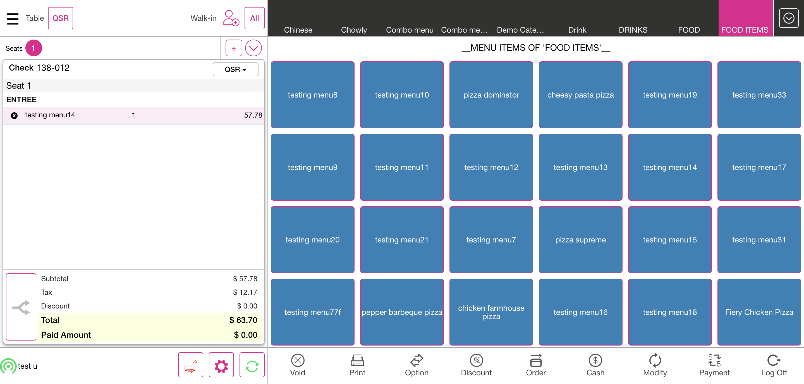PassCheck RoundOff value for menu item with both inclusive and exclusive tax with discountAnd I enter the pin in the pin screenAnd I have closed the order type windowAnd I have selected category arrowAnd Select the category "FOOD ITEMS"And Select the menu item "testing menu14"And I click Discount as "22% Discount"And I selected cancel buttonAnd Verify if tax is calculated properly and calculated roundOff Inc And ExcAnd Verify if the total value is calculated correctly for both inclusive and exclusive tax with discountAnd Verify if the balance due amount is displayed correctlyAnd Verify if the balance due amount is displayed correctly after the paymentAnd I click log off button in order screenPassCheck RoundOff value for menu item with exclusive tax with discount amountAnd I enter the pin in the pin screenAnd I have closed the order type windowAnd I have selected category arrowAnd Select the category "FOOD ITEMS"And Select the menu item "testing menu10"And I click Discount as "23$ discount"And I selected cancel buttonAnd Verify if tax "0.0622" is calculated properly and calculate roundOff for amount discount "23.66"And Verify if the total amount is calculated correctlyAnd Verify if the balance due amount is displayed correctlyAnd Verify if the balance due amount is displayed correctly after the paymentAnd I click log off button in order screenPassCheck RoundOff value for menu item with inclusive tax with discount amountAnd I enter the pin in the pin screenAnd I have closed the order type windowAnd I have selected category arrowAnd Select the category "FOOD ITEMS"And Select the menu item "testing menu11"And I click Discount as "32$ discount"And I selected cancel buttonAnd Verify if tax "14.77" is calculated properly and calculate roundOff for amount discount Inclusive "32.33"And Verify if the balance due amount is displayed correctlyAnd Verify if the balance due amount is displayed correctly after the paymentAnd I click log off button in order screenPassCheck RoundOff value for menu item with exclusive tax with set priceAnd I enter the pin in the pin screenAnd I have closed the order type windowAnd I have selected category arrowAnd Select the category "FOOD ITEMS"And Select the menu item "testing menu10"And I click Discount as "set price discount"And I selected cancel buttonAnd Verify if tax is calculated properly and calculate roundOff for set price discount ExclusiveAnd Verify if the balance due amount is displayed correctlyAnd Verify if the balance due amount is displayed correctly after the paymentAnd I click log off button in order screenPassCheck RoundOff value for menu item with inclusive tax with set priceAnd I enter the pin in the pin screenAnd I have closed the order type windowAnd I have selected category arrowAnd Select the category "FOOD ITEMS"And Select the menu item "testing menu11"And I click Discount as "set price discount"And I selected cancel buttonAnd Verify if tax is calculated properly and calculate roundOff for set price discount InclusiveAnd Verify if the balance due amount is displayed correctlyAnd Verify if the balance due amount is displayed correctly after the paymentAnd I click log off button in order screenPassCheck RoundOff value for menu item with exclusive tax with check discountAnd I enter the pin in the pin screenAnd I have closed the order type windowAnd I have selected category arrowAnd Select the category "FOOD ITEMS"And Select the menu item "pizza supreme"And Select the menu item "pizza dominator"And I click Discount as "check discount 24%"And I selected cancel buttonAnd Verify if tax is calculated properly "0.24" "0.10255" "0.0622" and calculate roundOff for check discount exclusiveAnd Verify if the balance due amount is displayed correctlyAnd Verify if the balance due amount is displayed correctly after the paymentAnd I click log off button in order screenPassCheck RoundOff value for menu item with inclusive tax with check discountAnd I enter the pin in the pin screenAnd I have closed the order type windowAnd I have selected category arrowAnd Select the category "FOOD ITEMS"And Select the menu item "chicken farmhouse pizza"And Select the menu item "cheesy pasta pizza"And I click Discount as "check discount 24%"And I selected cancel buttonAnd Verify if tax "0.24" is calculated properly and calculate roundOff for check discount "16.12" inclusiveAnd Verify if the balance due amount is displayed correctlyAnd Verify if the balance due amount is displayed correctly after the paymentAnd I click log off button in order screenPassCheck RoundOff value for menu item with exclusive tax with open item discountAnd I enter the pin in the pin screenAnd I have closed the order type windowAnd I have selected category arrowAnd Select the category "FOOD ITEMS"And Select the menu item "testing menu15"And I selected menu optionsAnd I selected Open DiscountAnd I tapped the percentage fieldAnd I entered the discount percentageAnd I selected the Continue buttonAnd I tapped reason and entered the reasonAnd I selected the apply buttonAnd Verify If Tax "0.1345" Is Calculated Properly And Calculate RoundOff for Open Discount "0.10255" ExclusiveAnd Verify if the total amount is calculated correctly for exclusive open discountAnd Verify if the balance due amount is displayed correctlyAnd Verify if the balance due amount is displayed correctly after the paymentAnd I click log off button in order screenPassCheck RoundOff value for menu item with inclusive tax with open item discountAnd I enter the pin in the pin screenAnd I have closed the order type windowAnd I have selected category arrowAnd Select the category "FOOD ITEMS"And Select the menu item "testing menu16"And I selected menu optionsAnd I selected Open DiscountAnd I tapped the percentage fieldAnd I entered the discount percentageAnd I selected the Continue buttonAnd I tapped reason and entered the reasonAnd I selected the apply buttonAnd Verify If Tax Is Calculated Properly And Calculate RoundOff for Open Discount InclusiveAnd Verify if the balance due amount is displayed correctlyAnd Verify if the balance due amount is displayed correctly after the paymentAnd I click log off button in order screenFailCheck RoundOff value for menu item with exclusive tax with item discount after taxAnd I enter the pin in the pin screenAnd I have closed the order type windowAnd I have selected category arrowAnd Select the category "FOOD ITEMS"And Select the menu item "testing menu17"And I selected quantity as "2"And I click Discount as "45% Discount"And I selected cancel buttonAnd Verify If Tax "0.10255" and discount "0.4567" Is Calculated Properly And Calculate RoundOff for item discount after tax ExclusiveAnd Verify if the balance due amount is displayed correctlyStep skippedAnd Verify if the balance due amount is displayed correctly after the paymentStep skippedAnd I click log off button in order screenStep skippedcom.qa.stepdef.Hooks.quit(io.cucumber.java.Scenario)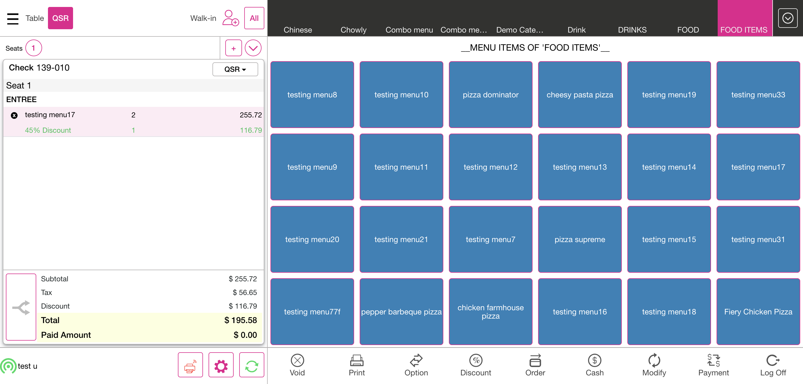FailCheck RoundOff value for menu item with inclusive tax with item discount after taxAnd I enter the pin in the pin screenAnd I have closed the order type windowAnd I have selected category arrowAnd Select the category "FOOD ITEMS"And Select the menu item "testing menu18"And I selected quantity as "4"And I click Discount as "45% Discount"And I selected cancel buttonAnd Verify If Tax "17.62" and discount "0.4567" Is Calculated Properly And Calculate RoundOff for item discount after tax InclusiveAnd Verify if the balance due amount is displayed correctlyStep skippedAnd Verify if the balance due amount is displayed correctly after the paymentStep skippedAnd I click log off button in order screenStep skippedcom.qa.stepdef.Hooks.quit(io.cucumber.java.Scenario)PassCheck RoundOff value for menu item with tax on item tax ExclusiveAnd I enter the pin in the pin screenAnd I have closed the order type windowAnd I have selected category arrowAnd Select the category "FOOD ITEMS"And Select the menu item "testing menu19"And Verify If Tax "0.1598" and tax on item tax "0.1367" Is Calculated Properly And Calculate RoundOff for item discount after tax ExclusiveAnd Verify if the balance due value is calculated correctlyAnd Verify if the balance due value is displayed correctly after paymentAnd I click log off button in order screenPassCheck RoundOff value for menu item with tax on item tax InclusiveAnd I enter the pin in the pin screenAnd I have closed the order type windowAnd I have selected category arrowAnd Select the category "FOOD ITEMS"And Select the menu item "testing menu20"And Verify If Tax "17.666" and tax on item tax "0.28555" Is Calculated Properly And Calculate RoundOff for item discount after tax InclusiveAnd Verify if the balance due value is calculated correctlyAnd Verify if the balance due value is displayed correctly after paymentAnd I click log off button in order screenPassCheck RoundOff value for menu item with exclusive tax and mix and match discountAnd I enter the pin in the pin screenAnd I have closed the order type windowAnd I have selected category arrowAnd Select the category "IceCreams"And Select the menu item "testing menu22"And I click Discount as "Mix ad Match1"And I selected cancel buttonAnd Verify If Tax "0.10255" Is Calculated Properly And Calculate RoundOff for item discount after tax ExclusiveAnd Verify if the balance due amount is displayed correctlyAnd Verify if the balance due amount is displayed correctly after the paymentAnd I click log off button in order screenPassCheck RoundOff value for menu item with inclusive tax and mix and match discountAnd I enter the pin in the pin screenAnd I have closed the order type windowAnd I have selected category arrowAnd Select the category "IceCreams"And Select the menu item "testing menu23"And I selected quantity as "2"And I click Discount as "Mix and Match2"And I selected cancel buttonAnd Verify If Tax "16.12" and discount "13.24" Is Calculated Properly And Calculate RoundOff for item discount before tax InclusiveAnd Verify if the balance due amount is displayed correctlyAnd Verify if the balance due amount is displayed correctly after the paymentAnd I click log off button in order screenPassCheck RoundOff value for menu item with exclusive tax, inclusive tax modifier and mix and match discount PercentageAnd I enter the pin in the pin screenAnd I have closed the order type windowAnd I have selected category arrowAnd Select the category "IceCreams"And Select the menu item "testing menu24"And I selected the modifier "Sambar"And I selected the modifier "Sambar"And I selected the prefix "Meals"And I click Discount as "Mix and Match3"And I selected cancel buttonAnd Verify If Exc Tax "0.0622" and inclusive modifier tax "0.13450" are Calculated Properly And Calculate RoundOff for item discount after tax ExclusiveAnd Verify if the balance due amount is displayed correctlyAnd Verify if the balance due amount is displayed correctly after the paymentAnd I click log off button in order screenPassCheck RoundOff value for menu item with exclusive tax and free item discountAnd I enter the pin in the pin screenAnd I have closed the order type windowAnd I have selected category arrowAnd Select the category "PIZZA"And Select the menu item "PEPPERONI PIZZA"And I selected the serving size as "MEDIUM"And I click Discount as "free item disc"And I selected cancel buttonAnd Verify if exclusive tax "0.05623" is calculated properly and calculate roundoffAnd Verify if the total value is calculated correctly exc when free item amount is "1"And Verify if the balance due value is calculated correctlyAnd Verify if the balance due value is displayed correctly after paymentAnd I click log off button in order screenPassCheck RoundOff value for menu item with inclusive tax and free item discountAnd I enter the pin in the pin screenAnd I have closed the order type windowAnd I have selected category arrowAnd Select the category "PIZZA"And Select the menu item "Jalapeno Chicken Pizza"And I selected the serving size as "SMALL" conversationalAnd I click Discount as "free item disc"And I selected cancel buttonAnd Verify if inclusive tax "14.14" is calculated properly and calculate roundoffAnd Verify if the total value is calculated correctly inc when free item amount is "1"And Verify if the balance due value is calculated correctlyAnd Verify if the balance due value is displayed correctly after paymentAnd I click log off button in order screenPassCheck RoundOff value for menu item with both exclusive and inclusive tax with free item discountAnd I enter the pin in the pin screenAnd I have closed the order type windowAnd I have selected category arrowAnd Select the category "PIZZA"And Select the menu item "Chicken Overload Pizza"And I click Discount as "free item disc"And I selected cancel buttonAnd Verify if exclusive tax "0.05623" and inclusive tax "14.14" are calculated properly and calculate roundoffAnd Verify if the total value is calculated correctly exc "0.05623" and inc when free item amount is "1"And Verify if the balance due value is calculated correctlyAnd Verify if the balance due value is displayed correctly after paymentAnd I click log off button in order screenPassCheck RoundOff value for menu item with exclusive tax when tax is exemptedAnd I enter the pin in the pin screenAnd I have closed the order type windowAnd I have selected category arrowAnd Select the category "FOOD ITEMS"And Select the menu item "testing menu9"And Verify if the ExcTax "0.10255" is calculated correctlyAnd Verify if the total value is calculated correctlyAnd Selected Options buttonAnd Select tax exempt optionAnd I verfiy if the tax amount is exemptedAnd Verify if the balance due value is calculated correctly tax exemptAnd Verify if the balance due value is displayed correctly after paymentAnd I click log off button in order screenPassCheck RoundOff value for menu item with inclusive tax when tax is exemptedAnd I enter the pin in the pin screenAnd I have closed the order type windowAnd I have selected category arrowAnd Select the category "FOOD ITEMS"And Select the menu item "testing menu8"And Verify if the tax "12" is calculated correctlyAnd Selected Options buttonAnd Select tax exempt optionAnd I verfiy if the tax amount is exempted inclusiveAnd Verify if the balance due value is calculated correctly tax exemptAnd Verify if the balance due value is displayed correctly after paymentAnd I click log off button in order screenPassCheck RoundOff value for menu item with both inclusive and exclusive tax when tax is exemptedAnd I enter the pin in the pin screenAnd I have closed the order type windowAnd I have selected category arrowAnd Select the category "FOOD ITEMS"And Select the menu item "testing menu14"And Verify if both the taxes are calculated correctly and calculate round-offAnd Selected Options buttonAnd Select tax exempt optionAnd I verfiy if the tax amount is exempted both exclusive and inclusiveAnd Verify if the balance due value is calculated correctly tax exemptAnd Verify if the balance due value is displayed correctly after paymentAnd I click log off button in order screenPassCheck RoundOff value for menu item after reopening check and adding new menu item ExcAnd I enter the pin in the pin screenAnd I have closed the order type windowAnd I get check numberAnd I have selected category arrowAnd Select the category "FOOD ITEMS"And Select the menu item "testing menu9"And Verify if the ExcTax "0.10255" is calculated correctlyAnd Verify if the total value is calculated correctlyAnd Verify if the balance due value is calculated correctlyAnd Verify if the balance due value is displayed correctly after paymentAnd Select the All optionAnd I click Closed tab on the Check statsThen I should see closed check in closed check tabAnd I click reopen check button on the check stats screenAnd I have selected category arrowAnd Select the category "FOOD ITEMS"And Select the menu item "testing menu9"And Verify if the ExcTax is calculated correctly Reopen "0.10255"And Verify If The Total Value Is Calculated Correctly Reopen ExcAnd Verify if the balance due value is calculated correctly After Reopen ExcAnd Verify if the balance due value is displayed correctly after paymentAnd I click log off button in order screenPassCheck RoundOff value for menu item after reopening check and adding new menu item IncAnd I enter the pin in the pin screenAnd I have closed the order type windowAnd I get check numberAnd I have selected category arrowAnd Select the category "FOOD ITEMS"And Select the menu item "testing menu8"And Verify if the tax "12" is calculated correctlyAnd Verify if the total is calculated correctlyAnd Verify if the balance due is calculated correctlyAnd Verify if the balance due is displayed correctly after paymentAnd Select the All optionAnd I click Closed tab on the Check statsThen I should see closed check in closed check tabAnd I click reopen check button on the check stats screenAnd I have selected category arrowAnd Select the category "FOOD ITEMS"And Select the menu item "testing menu8"And Verify if the IncTax is calculated correctly Reopen "12"And Verify If The Total Value Is Calculated Correctly Reopen IncAnd Verify if the balance due value is calculated correctly After Reopen ExcAnd Verify if the balance due value is displayed correctly after paymentAnd I click log off button in order screenPassCheck RoundOff value for menu item after reopening check and submittingAnd I enter the pin in the pin screenAnd I have closed the order type windowAnd I get check numberAnd I have selected category arrowAnd Select the category "FOOD ITEMS"And Select the menu item "testing menu9"And Verify if the ExcTax "0.10255" is calculated correctlyAnd Verify if the total value is calculated correctlyAnd Verify if the balance due value is calculated correctlyAnd Verify if the balance due value is displayed correctly after paymentAnd Select the All optionAnd I click Closed tab on the Check statsThen I should see closed check in closed check tabAnd I click reopen check button on the check stats screenAnd I Selected payment buttonAnd I click log off button in order screenPassCheck RoundOff value for menu item after reopening check and voidingAnd I enter the pin in the pin screenAnd I have closed the order type windowAnd I get check numberAnd I have selected category arrowAnd Select the category "FOOD ITEMS"And Select the menu item "testing menu8"And Verify if the tax "12" is calculated correctlyAnd Verify if the total is calculated correctlyAnd Verify if the balance due is calculated correctlyAnd Verify if the balance due is displayed correctly after paymentAnd Select the All optionAnd I click Closed tab on the Check statsThen I should see closed check in closed check tabAnd I click reopen check button on the check stats screenAnd I deleted the paymentAnd I selected void buttonAnd Select the Void reason as "Server Error"And I click log off button in order screenPassCheck tax and RoundOff value for menu item with quantity tax along with rounding offAnd I enter the pin in the pin screenAnd I have closed the order type windowAnd I have selected category arrowAnd Select the category "chicken"And Select the sub category "dry chicken"And Select the menu item "Chilli Chicken Dry"And Verify if tax is calculated as per the quantity "1" and tax "0.04567"And I have selected category arrowAnd Select the category "chicken"And Select the sub category "dry chicken"And Select the menu item "Chilli Chicken Dry"And I selected quantity as "3"And Verify if tax is calculated as per the quantity "3" and tax "0.06789"And I have selected category arrowAnd Select the category "chicken"And Select the sub category "dry chicken"And Select the menu item "Chilli Chicken Dry"And I selected quantity as "5"And Verify if tax is calculated as per the quantity "5" and tax "0.08901"And I click log off button in order screenPassVerify tax and round off for exclusive menu item and inclusive tax modifierAnd I enter the pin in the pin screenAnd I have closed the order type windowAnd I have selected category arrowAnd Select the category "IceCreams"And Select the menu item "testing menu24"And I selected the modifier "Sambar"And I selected the modifier "Sambar"And I selected the prefix "Meals"And I click Discount as "Mix and Match3"And I selected cancel buttonAnd Verify If Exc Tax "0.0622" and inclusive modifier tax "0.13450" are Calculated Properly And Calculate RoundOff for item discount after tax ExclusiveAnd Verify if the balance due amount is displayed correctlyAnd Verify if the balance due amount is displayed correctly after the paymentAnd I click log off button in order screenPassVerify tax and round off after reopening check and deleting discountAnd I enter the pin in the pin screenAnd I have closed the order type windowAnd I get check numberAnd I have selected category arrowAnd Select the category "FOOD ITEMS"And Select the menu item "testing menu10"And I click Discount as "20% Discount"And I selected cancel buttonAnd Verify if tax "0.20" "0.0622" is calculated properly and calculate round-offAnd Verify if the total amount is calculated correctlyAnd Verify if the balance due amount is calculated correctlyAnd Verify if the balance due amount is displayed correctly after paymentAnd Select the All optionAnd I click Closed tab on the Check statsThen I should see closed check in closed check tabAnd I click reopen check button on the check stats screenAnd Remove the item discount "20% Discount"And Verify if tax "0.0622" is calculated properly after removing discount and calculate round-offAnd Verify if the total value is calculated correctlyAnd Verify if the balance due value is calculated correctly after removing discountAnd Verify if the balance due value is displayed correctly after paymentAnd I click log off button in order screenFailVerify tax and round off after reopening check and deleting discount inclusiveAnd I enter the pin in the pin screenAnd I have closed the order type windowAnd I get check numberAnd I have selected category arrowAnd Select the category "FOOD ITEMS"And Select the menu item "testing menu11"And I click Discount as "30% Discount"And I selected cancel buttonAnd Verify if tax "0.30" "14.77" is calculated correctly and calculate round-offAnd Verify if the total amount is displayed correctlyAnd Verify if the balance due amount is displayed correctlyAnd Verify if the balance due amount is displayed correctly after the paymentAnd Select the All optionAnd I click Check Stats tabAnd I click Closed tab on the Check statsThen I should see closed check in closed check tabAnd I click reopen check button on the check stats screenAnd Remove the item discount "30% Discount"And I selected cancel buttonAnd Verify if inclusive tax "14.77" is calculated properly and calculate roundoffStep skippedAnd Verify if the total amount is displayed correctlyStep skippedAnd Verify if the balance due amount is displayed correctlyStep skippedAnd Verify if the balance due amount is displayed correctly after the paymentStep skippedAnd I click log off button in order screenStep skippedcom.qa.stepdef.Hooks.quit(io.cucumber.java.Scenario)PassVerify tax and round off for exclusive menu item and alternate modifierAnd I enter the pin in the pin screenAnd I have closed the order type windowAnd I get check numberAnd I have selected category arrowAnd Select the category "IceCreams"And Select the menu item "testing menu25"And I selected the modifier "CHEESE"And I selected Alternate modifier buttonAnd I selected the alternate modifier "Avocado"And I selected OK buttonAnd Verify if the ExcTax "0.10255" is calculated correctlyAnd Verify if the total value is calculated correctlyAnd Verify if the balance due value is calculated correctlyAnd Verify if the balance due value is displayed correctly after paymentAnd I click log off button in order screenPassVerify tax and round off for exclusive menu item and alternate modifier (with prefix)And I enter the pin in the pin screenAnd I have closed the order type windowAnd I get check numberAnd I have selected category arrowAnd Select the category "IceCreams"And Select the menu item "testing menu26"And I selected the modifier "Brinjal"And I selected Alternate modifier buttonAnd I selected the alternate modifier "CHEESE"And I selected the Prefix "double"And I selected OK buttonAnd Verify If Exc Tax "0.10255" and inclusive modifier tax "0.08655" are Calculated Properly And Calculate RoundOff for item discount after tax ExclusiveAnd Verify if the balance due value is calculated correctlyAnd Verify if the balance due value is displayed correctly after paymentAnd I click log off button in order screenPassVerify tax and round off for inclusive menu item and alternate modifier (with prefix)And I enter the pin in the pin screenAnd I have closed the order type windowAnd I get check numberAnd I have selected category arrowAnd Select the category "chicken"And Select the sub category "gravies"And Select the menu item "pepper chicken"And I selected the modifier "half"And I selected Alternate modifier buttonAnd I selected the alternate modifier "sprinkled cheese"And I selected the Prefix "Extra"And I selected OK buttonAnd Verify If Inc Tax "0.1612" and exclusive modifier tax "0.10255" are Calculated Properly And Calculate RoundOff for item discount after tax ExclusiveAnd Verify if the balance due value is calculated correctlyAnd Verify if the balance due value is displayed correctly after paymentAnd I click log off button in order screenPassVerify tax and round off for exclusive menu item after doing split by seatAnd I enter the pin in the pin screenAnd I have closed the order type windowAnd I get check numberAnd I have selected category arrowAnd Select the category "chicken"And Select the sub category "Rolls"And Select the menu item "chicken roll"And Verify if exclusive tax "0.06220" is calculated properly and calculate roundoffAnd I have selected category arrowAnd Select the category "DRINKS"And Select the menu item "blue lagoon"And Verify if exclusive taxes "0.06220" and "0.10255" are calculated properly and calculate roundoffAnd I selected order buttonAnd User click QSR on Menu Item page in split screenAnd User select DineIn mode in split screenAnd I selected the tableAnd I selected the split buttonAnd I selected the split option as Split CheckAnd Verify if exclusive taxes "0.10255" and "0.06220" are calculated properly in split screenAnd I selected Add buttonAnd I selected the menu1And I transferred the menu to new checkAnd I check if exc tax "0.06220" is calculated properly for first checkAnd I check if exc tax "0.10255" is calculated properly for second checkAnd I select Print buttonAnd I get check1 numberAnd I get check2 numberThen User click save and close in split screenAnd I check if exc tax "0.06220" is calculated properly in menu screen after splitThen User click finish button in split screenAnd I click Check Stats tabAnd I click Active tab on the Check statsThen I should see active check2 in active check tabAnd I click open check button on the check stats screenAnd I check if exc tax "0.10255" is calculated properly in menu screen after splitAnd Verify if the balance due value is calculated correctlyAnd Verify if the balance due value is displayed correctly after payment split mergeAnd I click log off button in order screenPassVerify tax and round off for inclusive menu item after doing split by seatAnd I enter the pin in the pin screenAnd I have closed the order type windowAnd I get check numberAnd I have selected category arrowAnd Select the category "chicken"And Select the sub category "Rolls"And Select the menu item "Mutton roll"And Verify if inclusive tax "8.789" is calculated properly and calculate roundoffAnd I have selected category arrowAnd Select the category "DRINKS"And Select the menu item "Mint Lime"And Verify if inclusive taxes "13.789" and "8.789" are calculated properly and calculate roundoffAnd I selected order buttonAnd User click QSR on Menu Item page in split screenAnd User select DineIn mode in split screenAnd I selected the tableAnd I selected the split buttonAnd I selected the split option as Split CheckAnd Verify if inclusive taxes "8.789" and "13.789" are calculated properly and calculate roundoffAnd I selected Add buttonAnd I selected the menu1And I transferred the menu to new checkAnd I check if inc tax "8.789" is calculated properly for first checkAnd I check if inc tax "13.789" is calculated properly for second checkAnd I select Print buttonAnd I get check1 numberAnd I get check2 numberThen User click save and close in split screenAnd I check if inc tax "8.789" is calculated properly in menu screen after splitThen User click finish button in split screenAnd I click Check Stats tabAnd I click Active tab on the Check statsThen I should see active check2 in active check tabAnd I click open check button on the check stats screenAnd I check if inc tax "13.789" is calculated properly in menu screen after splitAnd Verify if the balance due value is calculated correctlyAnd Verify if the balance due value is displayed correctly after payment split mergeAnd I click log off button in order screenPassCheck tax and RoundOff value for menu item with inclusive tax 2And I enter the pin in the pin screenAnd I have closed the order type windowAnd I have selected category arrowAnd Select the category "FOOD ITEMS"And Select the menu item "testing menu31"And Verify if the tax is calculated correctly "8.789" and "13.789" inclusiveAnd Verify if the total is calculated correctlyAnd Verify if the balance due is calculated correctlyAnd Verify if the balance due is displayed correctly after paymentAnd I click log off button in order screenPassCheck tax and RoundOff value after adding multiple menu items with exclusive tax and voiding one menu itemAnd I enter the pin in the pin screenAnd I have closed the order type windowAnd I get check numberAnd I have selected category arrowAnd Select the category "FOOD ITEMS"And Select the menu item "testing menu10"And I have selected category arrowAnd Select the category "FOOD ITEMS"And Select the menu item "testing menu10"And Verify if exclusive tax "0.0622" and "0.0622" are calculated properly and calculate roundoffAnd I selected order buttonAnd I selected menu optionsAnd I selected void button in menu optionsAnd Select the Void item reason as "Server Error"And Verify if exclusive tax "0.0622" is calculated properly and calculate roundoffAnd Verify if the total value is calculated correctlyAnd Verify if the balance due value is calculated correctlyAnd Verify if the balance due value is displayed correctly after paymentAnd I click log off button in order screenPassCheck tax and RoundOff value after adding multiple menu items with inclusive tax and voiding one menu itemAnd I enter the pin in the pin screenAnd I have closed the order type windowAnd I get check numberAnd I have selected category arrowAnd Select the category "FOOD ITEMS"And Select the menu item "testing menu8"And I have selected category arrowAnd Select the category "FOOD ITEMS"And Select the menu item "testing menu8"And Verify if inclusive tax "12" and "12" are calculated properly and calculate roundoffAnd I selected order buttonAnd I selected menu optionsAnd I selected void button in menu optionsAnd Select the Void item reason as "Server Error"And Verify if inclusive tax "12" is calculated properly and calculate roundoffAnd Verify if the total is calculated correctlyAnd Verify if the balance due is calculated correctlyAnd Verify if the balance due is displayed correctly after paymentAnd I click log off button in order screenFailVerify tax and round off for exclusive menu item after doing merge seatsAnd I enter the pin in the pin screenAnd I have closed the order type windowAnd Select the All optionAnd Select table layout optionAnd I selected new check buttonAnd I selected the table1And I selected seat numberAnd I get check numberAnd I get table numberAnd I have selected category arrowAnd Select the category "chicken"And Select the sub category "Shawarma"And Select the menu item "cheesy shawarma"And Verify if exclusive tax "0.23765" is calculated properly and calculate roundoffThen User click finish button in split screenAnd I selected new check buttonAnd I selected the table2And I selected seat numberAnd I get table number2And I get check number2And I have selected category arrowAnd Select the category "FOOD"And Select the menu item "double patty burger"And Verify if exclusive tax "0.10255" is calculated properly and calculate roundoffThen User click finish button in split screenAnd I now merge the check1And I now merge the check2And I click Done button on the open item windowAnd I click Done button on the open item window second timeAnd I selected the table with merged checksAnd Verify if exclusive taxes "0.23765" and "0.10255" are calculated properly and calculate roundoffAnd Verify if the balance due value is calculated correctlyStep skippedAnd Verify if the balance due value is displayed correctly after payment split mergeStep skippedAnd I click log off button in order screenStep skippedcom.qa.stepdef.Hooks.quit(io.cucumber.java.Scenario)FailVerify tax and round off for exclusive menu item after doing merge seats applying check discountAnd I enter the pin in the pin screenAnd I have closed the order type windowAnd Select the All optionAnd Select table layout optionAnd I selected new check buttonAnd I selected the table1And I selected seat numberAnd I get check numberAnd I get table numberAnd I have selected category arrowAnd Select the category "Arab Biriyani"And Select the menu item "testing menu32"And I click Discount as "check 20"And I selected cancel buttonAnd Verify if tax is calculated properly and calculate roundOff for check discount "0.20" exclusive "0.10255"Then User click finish button in split screenAnd I selected new check buttonAnd I selected the table2And I selected seat numberAnd I get table number2And I get check number2And I have selected category arrowAnd Select the category "Arab Biriyani"And Select the menu item "testing menu32"And I click Discount as "check 20"And I selected cancel buttonAnd Verify if tax is calculated properly and calculate roundOff for check discount "0.20" exclusive "0.10255"Then User click finish button in split screenAnd I now merge the check1 with discountAnd I now merge the check2 with discountAnd I click Done button on the open item windowAnd I click Confirm buttonAnd I click Done button on the open item window second timeAnd I selected the table with merged checksAnd Verify if tax is calculated properly and calculate roundOff for check discount "0.20" exclusive "0.10255" and "0.10255"And Verify if the balance due amount is displayed correctlyStep skippedAnd Verify if the balance due value is displayed correctly after payment split mergeStep skippedAnd I click log off button in order screenStep skippedcom.qa.stepdef.Hooks.quit(io.cucumber.java.Scenario)FailVerify tax and round off for exclusive and check tax menu item after doing merge seatsAnd I enter the pin in the pin screenAnd I have closed the order type windowAnd Select the All optionAnd Select table layout optionAnd I selected new check buttonAnd I selected the table1And I selected seat numberAnd I get check numberAnd I get table numberAnd I have selected category arrowAnd Select the category "FOOD ITEMS"And Select the menu item "testing menu13"And Verify if the CheckTax "0.12444" is calculated correctly and calculate round-offThen User click finish button in split screenAnd I selected new check buttonAnd I selected the table2And I selected seat numberAnd I get table number2And I get check number2And I have selected category arrowAnd Select the category "FOOD ITEMS"And Select the menu item "testing menu13"And Verify if the CheckTax "0.12444" is calculated correctly and calculate round-offThen User click finish button in split screenAnd I now merge the check1And I now merge the check2And I click Done button on the open item windowAnd I click Done button on the open item window second timeAnd I selected the table with merged checksAnd Verify if the CheckTax "0.12444" is calculated correctly and calculate round-off multiple menuAnd Verify if the balance due value is calculated correctlyStep skippedAnd Verify if the balance due value is displayed correctly after payment split mergeStep skippedAnd I click log off button in order screenStep skippedcom.qa.stepdef.Hooks.quit(io.cucumber.java.Scenario)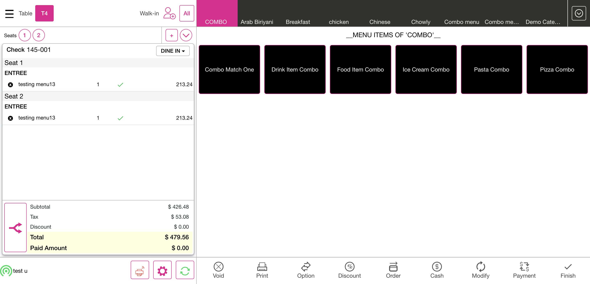PassVerify tax and round off for exclusive menu item applying 100% discountAnd I enter the pin in the pin screenAnd I have closed the order type windowAnd I get check numberAnd I have selected category arrowAnd Select the category "FOOD ITEMS"And Select the menu item "testing menu9"And I click Discount as "100% disc"And I selected cancel buttonAnd Verify if the tax is calculated correctly after 100% discountAnd Verify if the total is calculated correctly after 100% discountAnd Verify if the balance due value is calculated correctly after 100% discountAnd I click log off button in order screenPassVerify tax and round off for inclusive menu item applying 100% discountAnd I enter the pin in the pin screenAnd I have closed the order type windowAnd I get check numberAnd I have selected category arrowAnd Select the category "FOOD ITEMS"And Select the menu item "testing menu8"And I click Discount as "100% disc"And I selected cancel buttonAnd Verify if the tax is calculated correctly after 100% discountAnd Verify if the total is calculated correctly after 100% discountAnd Verify if the balance due value is calculated correctly after 100% discountAnd I click log off button in order screenPassVerify tax and round off for both exclusive and inclusive tax menu item applying 100% discountAnd I enter the pin in the pin screenAnd I have closed the order type windowAnd I get check numberAnd I have selected category arrowAnd Select the category "FOOD ITEMS"And Select the menu item "testing menu14"And I click Discount as "100% disc"And I selected cancel buttonAnd Verify if the tax is calculated correctly after 100% discountAnd Verify if the total is calculated correctly after 100% discountAnd Verify if the balance due value is calculated correctly after 100% discountAnd I click log off button in order screenPassVerify tax and roundoff after doing repeat order inclusiveAnd I enter the pin in the pin screenAnd I have closed the order type windowAnd I have selected category arrowAnd Select the category "FOOD ITEMS"And Select the menu item "testing menu8"And I selected menu optionsAnd I selected repeat orderAnd Verify if the IncTax is calculated correctly Reopen "12"And Verify If The Total Value Is Calculated Correctly Reopen IncAnd Verify if the balance due is calculated correctlyAnd Verify if the balance due is displayed correctly after paymentAnd I click log off button in order screenPassVerify tax and roundoff after doing repeat order exclusiveAnd I enter the pin in the pin screenAnd I have closed the order type windowAnd I have selected category arrowAnd Select the category "FOOD ITEMS"And Select the menu item "testing menu9"And I selected menu optionsAnd I selected repeat orderAnd Verify if the ExcTax is calculated correctly Reopen "0.10255"And Verify If The Total Value Is Calculated Correctly Reopen ExcAnd Verify if the balance due is calculated correctlyAnd Verify if the balance due is displayed correctly after paymentAnd I click log off button in order screenPassVerify tax and roundoff after placing menu items with check discount and reopen to void some menu itemsAnd I enter the pin in the pin screenAnd I have closed the order type windowAnd I get check numberAnd I have selected category arrowAnd Select the category "FOOD ITEMS"And Select the menu item "pizza supreme"And Select the menu item "pizza dominator"And I selected menu optionsAnd I selected repeat orderAnd I selected menu options2And I selected repeat orderAnd I click Discount as "check discount 24%"And I selected cancel buttonAnd Verify if tax is calculated properly "0.24" "0.10255" "0.0622" and calculate roundOff for check discount exclusive repeat orderAnd Verify if the balance due amount is displayed correctlyAnd Verify if the balance due amount is displayed correctly after the paymentAnd Select the All optionAnd I click Check Stats tabAnd I click Closed tab on the Check statsThen I should see closed check in closed check tabAnd I click reopen check button on the check stats screenAnd I deleted the paymentAnd I selected menu optionsAnd I selected void button in menu optionsAnd Select the Void item reason as "Server Error"And I selected menu options2 discountAnd I selected void button in menu optionsAnd Select the Void item reason as "Server Error"And Verify if tax is calculated properly "0.24" "0.10255" "0.0622" and calculate roundOff for check discount exclusiveAnd Verify if the balance due amount is displayed correctlyAnd Verify if the balance due amount is displayed correctly after the paymentAnd I click log off button in order screenPassVerify tax and roundoff after placing menu items with check discount then reopen to void some menu items and again reopen to void the checkAnd I enter the pin in the pin screenAnd I have closed the order type windowAnd I get check numberAnd I have selected category arrowAnd Select the category "FOOD ITEMS"And Select the menu item "pizza supreme"And Select the menu item "pizza dominator"And I selected menu optionsAnd I selected repeat orderAnd I selected menu options2And I selected repeat orderAnd I click Discount as "check discount 24%"And I selected cancel buttonAnd Verify if tax is calculated properly "0.24" "0.10255" "0.0622" and calculate roundOff for check discount exclusive repeat orderAnd Verify if the balance due amount is displayed correctlyAnd Verify if the balance due amount is displayed correctly after the paymentAnd Select the All optionAnd I click Check Stats tabAnd I click Closed tab on the Check statsThen I should see closed check in closed check tabAnd I click reopen check button on the check stats screenAnd I deleted the paymentAnd I selected menu optionsAnd I selected void button in menu optionsAnd Select the Void item reason as "Server Error"And I selected menu options2 discountAnd I selected void button in menu optionsAnd Select the Void item reason as "Server Error"And Verify if tax is calculated properly "0.24" "0.10255" "0.0622" and calculate roundOff for check discount exclusiveAnd Verify if the balance due amount is displayed correctlyAnd Verify if the balance due amount is displayed correctly after the paymentAnd Select the All optionAnd I click Check Stats tabAnd I click Closed tab on the Check statsThen I should see closed check in closed check tabAnd I click reopen check button on the check stats screenAnd I deleted the paymentAnd I selected void buttonAnd Select the Void reason as "Mistake"And I click log off button in order screenPassVerify tax and roundoff after placing menu items with exclusive tax and item service chargeAnd I enter the pin in the pin screenAnd I have closed the order type windowAnd I get check numberAnd I have selected category arrowAnd Select the category "Shakes"And Select the sub category "Can"And Select the menu item "Cranberry"And Verify If Tax "0.1200" and tax on item service charge "0.15980" Is Calculated Properly when item service charge "0.07654"And Verify If item service charge "0.07654" Is Calculated ProperlyAnd Verify if the balance due value is calculated correctly when item service charge is presentAnd Verify if the balance due value is displayed correctly after paymentAnd I click log off button in order screenPassVerify tax and roundoff after placing menu items with inclusive tax and item service chargeAnd I enter the pin in the pin screenAnd I have closed the order type windowAnd I get check numberAnd I have selected category arrowAnd Select the category "Sparklers"And Select the sub category "Basic"And Select the menu item "Minty orange"And Verify If Inclusive Tax "0.13450" and tax on item service charge "0.12000" Is Calculated Properly when item service charge "0.13467"And Verify If item service charge "0.13467" Is Calculated ProperlyAnd Verify if the balance due value is calculated correctly when item service charge is presentAnd Verify if the balance due value is displayed correctly after paymentAnd I click log off button in order screenPassCheck RoundOff value for menu item with exclusive tax with open item discount (amount BT)And I enter the pin in the pin screenAnd I have closed the order type windowAnd I have selected category arrowAnd Select the category "FOOD ITEMS"And Select the menu item "testing menu15"And I selected menu optionsAnd I selected Open DiscountAnd I tapped the amount fieldAnd I entered the discount amountAnd I selected the Continue buttonAnd I tapped reason and entered the reasonAnd I selected the apply buttonAnd Verify If Tax Is Calculated Properly And Calculate RoundOff for Open Discount "14.55" Exclusive "0.10255" Amount BTAnd Verify if the total amount is calculated correctly for exclusive open discountAnd Verify if the balance due amount is displayed correctlyAnd Verify if the balance due amount is displayed correctly after the paymentAnd I click log off button in order screenPassCheck RoundOff value for menu item with inclusive tax with open item discount (amount BT)And I enter the pin in the pin screenAnd I have closed the order type windowAnd I have selected category arrowAnd Select the category "FOOD ITEMS"And Select the menu item "testing menu16"And I selected menu optionsAnd I selected Open DiscountAnd I tapped the amount fieldAnd I entered the discount amountAnd I selected the Continue buttonAnd I tapped reason and entered the reasonAnd I selected the apply buttonAnd Verify If Tax Is Calculated Properly And Calculate RoundOff for Open Discount "14.55" Inclusive "0.17620" Amount BTAnd Verify if the balance due amount is displayed correctlyAnd Verify if the balance due amount is displayed correctly after the paymentAnd I click log off button in order screenPassCheck RoundOff value for menu item with exclusive tax with open item discount (percentage AT)And I enter the pin in the pin screenAnd I have closed the order type windowAnd I have selected category arrowAnd Select the category "FOOD ITEMS"And Select the menu item "testing menu15"And I selected menu optionsAnd I selected Open DiscountAnd I tapped the percentage fieldAnd I entered the discount percentageAnd I selected the Continue buttonAnd I tapped reason and entered the reasonAnd I selected After Tax optionAnd I selected the apply buttonAnd Verify If Tax "0.10255" and discount "0.1345" Is Calculated Properly And Calculate RoundOff for open item discount after tax ExclusiveAnd Verify if the total amount is calculated correctly for exclusive open discountAnd Verify if the balance due amount is displayed correctlyAnd Verify if the balance due amount is displayed correctly after the paymentAnd I click log off button in order screenPassCheck RoundOff value for menu item with inclusive tax with open item discount (percentage AT)And I enter the pin in the pin screenAnd I have closed the order type windowAnd I have selected category arrowAnd Select the category "FOOD ITEMS"And Select the menu item "testing menu16"And I selected menu optionsAnd I selected Open DiscountAnd I tapped the percentage fieldAnd I entered the discount percentageAnd I selected the Continue buttonAnd I tapped reason and entered the reasonAnd I selected After Tax optionAnd I selected the apply buttonAnd Verify If Tax "0.17620" and discount "0.1345" Is Calculated Properly And Calculate RoundOff for open item discount after tax InclusiveAnd Verify if the balance due amount is displayed correctlyAnd Verify if the balance due amount is displayed correctly after the paymentAnd I click log off button in order screenPassCheck RoundOff value for menu item (exclusive tax) along with modifier (exclusive tax) applying open item discount (amount BT)And I enter the pin in the pin screenAnd I have closed the order type windowAnd I have selected category arrowAnd Select the category "FOOD ITEMS"And Select the menu item "testing menu33"And I selected the modifier "Bbq"And I selected menu optionsAnd I selected Open DiscountAnd I tapped the amount fieldAnd I entered the discount amountAnd I selected the Continue buttonAnd I tapped reason and entered the reasonAnd I selected the apply buttonAnd Verify if exclusive tax menu "0.05623" exclusive tax modifier "0.10255" and discount "14.55" are calculated properlyAnd Verify if the balance due amount is displayed correctlyAnd Verify if the balance due amount is displayed correctly after the paymentAnd I click log off button in order screenFailCheck RoundOff value for menu item (inclusive tax) along with modifier (inclusive tax) applying open item discount (amount BT)And I enter the pin in the pin screenAnd I have closed the order type windowAnd I have selected category arrowAnd Select the category "Chinese"And Select the sub category "NoTVeg"And Select the menu item "testing menu34"And I selected the modifier2 "CHEESE"And I selected menu optionsAnd I selected Open DiscountAnd I tapped the amount fieldAnd I entered the discount amountAnd I selected the Continue buttonAnd I tapped reason and entered the reasonAnd I selected the apply buttonAnd Verify if inclusive tax menu "0.35000" inclusive tax modifier "0.08655" and discount "14.55" are calculated properlyAnd Verify if the balance due amount is displayed correctlyStep skippedAnd Verify if the balance due amount is displayed correctly after the paymentStep skippedAnd I click log off button in order screenStep skippedcom.qa.stepdef.Hooks.quit(io.cucumber.java.Scenario)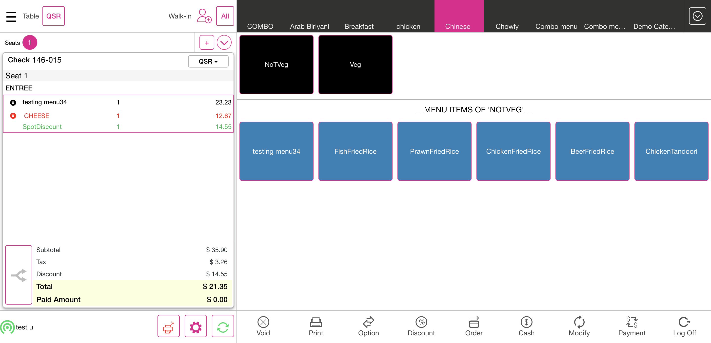PassCheck RoundOff value for menu item (exclusive tax) along with modifier (exclusive tax) applying open item discount (amount BT) with include additional modifiers toggle disabledAnd I enter the pin in the pin screenAnd I have closed the order type windowAnd I have selected category arrowAnd Select the category "FOOD ITEMS"And Select the menu item "testing menu33"And I selected the modifier "Bbq"And I selected menu optionsAnd I selected Open DiscountAnd I tapped the amount fieldAnd I entered the discount amountAnd I selected the Continue buttonAnd I tapped reason and entered the reasonAnd I selected the apply buttonAnd Verify if exclusive tax menu "0.05623" exclusive tax modifier "0.10255" and discount amount "14.55" are calculated properly toggle disabledAnd Verify if the balance due amount is displayed correctlyAnd Verify if the balance due amount is displayed correctly after the paymentAnd I click log off button in order screenFailCheck RoundOff value for menu item (inclusive tax) along with modifier (inclusive tax) applying open item discount (amount BT) with include additional modifiers toggle disabledAnd I enter the pin in the pin screenAnd I have closed the order type windowAnd I have selected category arrowAnd Select the category "Chinese"And Select the sub category ""NoTVeg"Step undefinedAnd Select the menu item "testing menu34"Step skippedAnd I selected the modifier "CHEESE"Step skippedAnd I click Done button on the open item windowStep skippedAnd I selected menu optionsStep skippedAnd I selected Open DiscountStep skippedAnd I tapped the amount fieldStep skippedAnd I entered the discount amountStep skippedAnd I selected the Continue buttonStep skippedAnd I tapped reason and entered the reasonStep skippedAnd I click "Hide keyboard" button in the keyboard "Click Back"Step skippedAnd I selected the apply buttonStep skippedAnd Verify if inclusive tax menu "0.35000" inclusive tax modifier "0.08655" and discount amount "14.55" are calculated properly toggle disabledStep skippedAnd Verify if the balance due amount is displayed correctlyStep skippedAnd Verify if the balance due amount is displayed correctly after the paymentStep skippedAnd I click log off button in order screenStep skippedFailCheck RoundOff value for menu item ($0) along with modifier (exclusive tax)And I enter the pin in the pin screenAnd I have closed the order type windowStep skippedAnd I have selected category arrowStep skippedAnd Select the category "Drink"Step skippedAnd Select the menu item "testing menu35"Step skippedAnd I selected the modifier2 "Modifier1"Step skippedAnd Verify If Inc Tax "0" and exclusive modifier tax "0.07000" are Calculated Properly And Calculate RoundOff for item discount after tax ExclusiveStep skippedAnd Verify if the balance due value is calculated correctlyStep skippedAnd Verify if the balance due value is displayed correctly after paymentStep skippedAnd I click log off button in order screenStep skippedcom.qa.stepdef.Hooks.quit(io.cucumber.java.Scenario)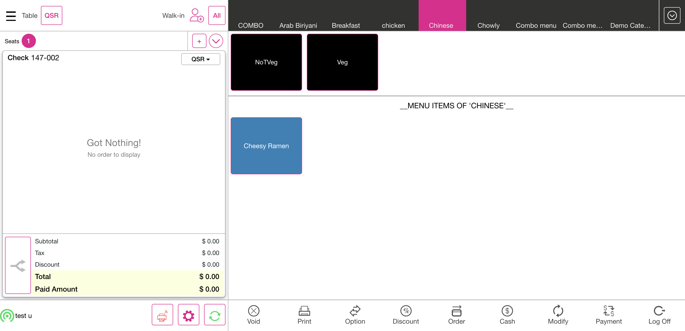PassLIN-21678 - Combo - Unable to get menu items (Exclusive)And I enter the pin in the pin screenAnd I have closed the order type windowAnd I have selected category arrowAnd Select the category "COMBO"And Select the menu item "Pizza Combo"And Select the combo menu item "testing menu12"And Select the combo menu item "testing menu17"And I click Done button on the open item windowAnd Verify if exclusive taxes "0.12000" and "0.10255" are calculated properly and calculate roundoff when combo discount "0.1222" is appliedAnd I selected order buttonAnd Verify if the balance due amount is displayed correctlyAnd Verify if the balance due value is displayed correctly after paymentAnd I click log off button in order screenFailLIN-21678 - Combo - Unable to get menu items (Inclusive)And I enter the pin in the pin screenAnd I have closed the order type windowAnd I have selected category arrowAnd Select the category "COMBO"And Select the menu item "Pasta Combo"And Select the combo menu item "testing menu18"And Select the combo menu item "testing menu11"Step skippedAnd I click Done button on the open item windowStep skippedAnd I click Done button on the open item windowStep skippedAnd Verify if inclusive taxes "0.17620" and "0.14770" are calculated properly and calculate roundoff when combo discount "0.3232" is appliedStep skippedAnd I selected order buttonStep skippedAnd Verify if the balance due amount is displayed correctlyStep skippedAnd Verify if the balance due amount is displayed correctly after the paymentStep skippedAnd I click log off button in order screenStep skippedcom.qa.stepdef.Hooks.quit(io.cucumber.java.Scenario)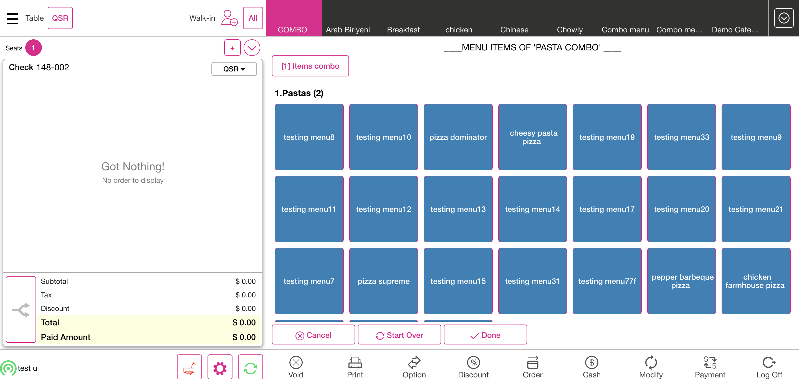PassLIN-21716 Total amount shows wrong when user apply combo discount exclusiveAnd I enter the pin in the pin screenAnd I have closed the order type windowAnd I have selected category arrowAnd Select the category "COMBO"And Select the menu item "Food Item Combo"And Select the combo menu item "menu 10.10"And Select the combo menu item "menu 20"And Select the combo menu item "menu 30"And Select the combo menu item "menu 40"And I click Done button on the open item windowAnd Verify if exclusive tax menu "0.10110" and combo discount set price "29" are calculated properlyAnd Verify if the balance due amount is displayed correctlyAnd Verify if the balance due amount is displayed correctly after the paymentAnd I click log off button in order screenPassLIN-21716 Total amount shows wrong when user apply combo discount inclusiveAnd I enter the pin in the pin screenAnd I have closed the order type windowAnd I have selected category arrowAnd Select the category "COMBO"And Select the menu item "Drink Item Combo"And Select the combo menu item "drink 10"And Select the combo menu item "drink 20"And Select the combo menu item "drink 30"And Select the combo menu item "drink 40"And I click Done button on the open item windowAnd Verify if inclusive tax menu "0.11110" and combo discount set price "29" are calculated properlyAnd Verify if the balance due amount is displayed correctlyAnd Verify if the balance due amount is displayed correctly after the paymentAnd I click log off button in order screenPassTax roundoff with exclusive menu item when multiple item discounts are applied (percentage - before tax)And I enter the pin in the pin screenAnd I have closed the order type windowAnd I have selected category arrowAnd Select the category "FOOD ITEMS"And Select the menu item "testing menu9"And I click Discount as "20% Discount"And I selected cancel buttonAnd I click Discount as "30% Discount"And I selected cancel buttonAnd Verify if exclusive tax "0.10255" is calculated properly when item discounts "0.20" and "0.30" are applied and calculate round-offAnd Verify if the balance due amount is displayed correctlyAnd Verify if the balance due amount is displayed correctly after the paymentAnd I click log off button in order screenPassTax roundoff with exclusive menu item when multiple item discounts are applied (amount - before tax)And I enter the pin in the pin screenAnd I have closed the order type windowAnd I have selected category arrowAnd Select the category "FOOD ITEMS"And Select the menu item "testing menu9"And I click Discount as "8$ d"And I selected cancel buttonAnd I click Discount as "12$ d"And I selected cancel buttonAnd Verify if exclusive tax "0.10255" is calculated properly when item discounts amount "8.00" and "12.00" are applied and calculate round-offAnd Verify if the balance due amount is displayed correctlyAnd Verify if the balance due amount is displayed correctly after the paymentAnd I click log off button in order screenPassTax roundoff with exclusive menu item when multiple item discounts are applied (percentage - after tax)And I enter the pin in the pin screenAnd I have closed the order type windowAnd I have selected category arrowAnd Select the category "FOOD ITEMS"And Select the menu item "testing menu9"And I click Discount as "20% AT"And I selected cancel buttonAnd I click Discount as "30% AT"And I selected cancel buttonAnd Verify if exclusive tax "0.10255" is calculated properly when item discounts "0.20" and "0.30" are applied and calculate round-off after taxAnd Verify if the balance due amount is displayed correctlyAnd Verify if the balance due amount is displayed correctly after the paymentAnd I click log off button in order screenPassTax roundoff with exclusive menu item when multiple item discounts are applied (amount - after tax)And I enter the pin in the pin screenAnd I have closed the order type windowAnd I have selected category arrowAnd Select the category "DRINKS"And Select the menu item "testing menu36"And I click Discount as "11$ AT"And I selected cancel buttonAnd I click Discount as "14$ AT"And I selected cancel buttonAnd Verify if exclusive tax "0.17174" is calculated properly when item discounts amount after tax "11.00" and "14.00" are applied and calculate round-offAnd Verify if the balance due amount is displayed correctlyAnd Verify if the balance due amount is displayed correctly after the paymentAnd I click log off button in order screenFailTax roundoff with exclusive menu item when multiple check discounts are appliedAnd I enter the pin in the pin screenAnd I have closed the order type windowAnd I have selected category arrowAnd Select the category "DRINKS"And Select the menu item "testing menu37"And I click Discount as "check 20%"And I selected cancel buttonAnd I click Discount as "check 30%"And I selected cancel buttonAnd Verify if exclusive tax "0.17174" is calculated properly when check discounts "0.20" and "0.30" are applied and calculate round-offAnd Verify if the balance due amount is displayed correctlyStep skippedAnd Verify if the balance due amount is displayed correctly after the paymentStep skippedAnd I click log off button in order screenStep skippedcom.qa.stepdef.Hooks.quit(io.cucumber.java.Scenario)PassTax roundoff with exclusive menu item when multiple check discounts are applied amountAnd I enter the pin in the pin screenAnd I have closed the order type windowAnd I have selected category arrowAnd Select the category "DRINKS"And Select the menu item "testing menu37"And I click Discount as "check 38.38$"And I selected cancel buttonAnd I click Discount as "check 18.18$"And I selected cancel buttonAnd Verify if exclusive tax "0.17174" is calculated properly when item discounts amount "38.38" and "18.18" are applied and calculate round-offAnd Verify if the balance due amount is displayed correctlyAnd Verify if the balance due amount is displayed correctly after the paymentAnd I click log off button in order screenFailTax roundoff with exclusive menu item when multiple check discounts are applied percentage ATAnd I enter the pin in the pin screenAnd I have closed the order type windowAnd I have selected category arrowAnd Select the category "DRINKS"And Select the menu item "testing menu37"And I click Discount as "27.27% check AT"And I selected cancel buttonAnd I click Discount as "22.22% check AT"And I selected cancel buttonAnd Verify if exclusive tax "0.17174" is calculated properly when item discounts "0.2727" and "0.2222" are applied and calculate round-off after taxAnd Verify if the balance due amount is displayed correctlyStep skippedAnd Verify if the balance due amount is displayed correctly after the paymentStep skippedAnd I click log off button in order screenStep skippedcom.qa.stepdef.Hooks.quit(io.cucumber.java.Scenario)PassTax roundoff with exclusive menu item when multiple check discounts are applied amount ATAnd I enter the pin in the pin screenAnd I have closed the order type windowAnd I have selected category arrowAnd Select the category "DRINKS"And Select the menu item "Butter Fruit"And I click Discount as "8.8$ check AT"And I selected cancel buttonAnd I click Discount as "4.4$ check AT"And I selected cancel buttonAnd Verify if exclusive tax "0.17174" is calculated properly when item discounts amount after tax "8.80" and "4.40" are applied and calculate round-offAnd Verify if the balance due amount is displayed correctlyAnd Verify if the balance due amount is displayed correctly after the paymentAnd I click log off button in order screenFailTax roundoff with exclusive menu item when multiple mix and match discounts are applied set price BTAnd I enter the pin in the pin screenAnd I have closed the order type windowAnd I have selected category arrowAnd Select the category "DRINKS"And Select the menu item "Butter Fruit"And I click Discount as "mix and 1"And I selected cancel buttonAnd I click Discount as "mix and 2"And I selected cancel buttonAnd Verify exc tax "0.17174" when multiple mix and match discounts set price are applied "120.00" and "100.00"And Verify if the balance due amount is displayed correctlyStep skippedAnd Verify if the balance due amount is displayed correctly after the paymentStep skippedAnd I click log off button in order screenStep skippedcom.qa.stepdef.Hooks.quit(io.cucumber.java.Scenario)FailTax roundoff with exclusive menu item when multiple mix and match discounts are applied set price ATAnd I enter the pin in the pin screenAnd I have closed the order type windowAnd I have selected category arrowAnd Select the category "DRINKS"And Select the menu item "Butter Fruit"And I click Discount as "Mix1 AT"And I selected cancel buttonAnd I click Discount as "Mix2 AT"And I selected cancel buttonAnd Verify exc tax "0.17174" when multiple mix and match discounts set price after tax are applied "120.00" and "100.00"And Verify if the balance due amount is displayed correctlyStep skippedAnd Verify if the balance due amount is displayed correctly after the paymentStep skippedAnd I click log off button in order screenStep skippedcom.qa.stepdef.Hooks.quit(io.cucumber.java.Scenario)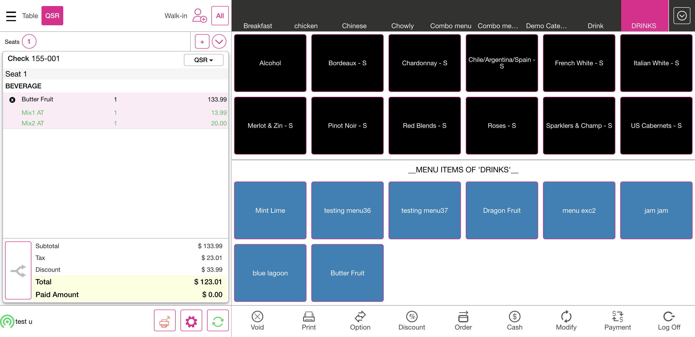FailTax roundoff with inclusive menu item when multiple mix and match discounts are applied set price BTAnd I enter the pin in the pin screenAnd I have closed the order type windowAnd I have selected category arrowAnd Select the category "DRINKS"And Select the menu item "Dragon Fruit"And I click Discount as "mix and 1"And I selected cancel buttonAnd I click Discount as "mix and 2"And I selected cancel buttonAnd Verify inc tax "0.14140" when multiple mix and match discounts set price are applied "120.00" and "100.00"And Verify if the balance due amount is displayed correctlyStep skippedAnd Verify if the balance due amount is displayed correctly after the paymentStep skippedAnd I click log off button in order screenStep skippedcom.qa.stepdef.Hooks.quit(io.cucumber.java.Scenario)FailTax roundoff with inclusive menu item when multiple mix and match discounts are applied set price ATAnd I enter the pin in the pin screenAnd I have closed the order type windowAnd I have selected category arrowAnd Select the category "DRINKS"And Select the menu item "Dragon Fruit"And I click Discount as "Mix1 AT"And I selected cancel buttonAnd I click Discount as "Mix2 AT"And I selected cancel buttonAnd Verify inc tax "0.14140" when multiple mix and match discounts set price are applied after tax "120.00" and "100.00"And Verify if the balance due amount is displayed correctlyStep skippedAnd Verify if the balance due amount is displayed correctly after the paymentStep skippedAnd I click log off button in order screenStep skippedcom.qa.stepdef.Hooks.quit(io.cucumber.java.Scenario)FailTax roundoff with exclusive menu item when multiple mix and match discounts are applied percentage BTAnd I enter the pin in the pin screenAnd I have closed the order type windowAnd I have selected category arrowAnd Select the category "DRINKS"And Select the menu item "Butter Fruit"And I click Discount as "Mix 10.12%"And I selected cancel buttonAnd I click Discount as "Mix 6.34%"And I selected cancel buttonAnd Verify exc tax "0.17174" when multiple mix and match discounts percentage are applied "10.12" and "6.34"And Verify if the balance due amount is displayed correctlyStep skippedAnd Verify if the balance due amount is displayed correctly after the paymentStep skippedAnd I click log off button in order screenStep skippedcom.qa.stepdef.Hooks.quit(io.cucumber.java.Scenario)FailTax roundoff with exclusive menu item when multiple mix and match discounts are applied percentage ATAnd I enter the pin in the pin screenAnd I have closed the order type windowAnd I have selected category arrowAnd Select the category "DRINKS"And Select the menu item "Butter Fruit"And I click Discount as "Mix 13.11% AT"And I selected cancel buttonAnd I click Discount as "Mix 21.11% AT"And I selected cancel buttonAnd Verify exc tax "0.17174" when multiple mix and match discounts percentage are applied AT "13.11" and "21.11"And Verify if the balance due amount is displayed correctlyStep skippedAnd Verify if the balance due amount is displayed correctly after the paymentStep skippedAnd I click log off button in order screenStep skippedcom.qa.stepdef.Hooks.quit(io.cucumber.java.Scenario)PassVerify if modifier price is displayed correctly if menu quantity is increased (set tiered price present for modifier).And I enter the pin in the pin screenAnd I have closed the order type windowAnd I have selected category arrowAnd Select the category "Tiered Price"And Select the menu item "Tiered menu1"And I selected the modifier2 "Lettuce Veg"And I verify if the modifier price "0.00" is correct for the first modifierAnd Verify if the ExcTax "0.10000" is calculated correctlyAnd I selected the modifier2 "Lettuce Veg"And I verify if the modifier price "2.00" is correct for the second modifierAnd I reduced one quantity of the modifierAnd I verify if the modifier price "0.00" is correct for the first modifierAnd I click Done button on the open item windowAnd I selected quantity as "2"And I verify if the modifier price "0.00" is correct for the first modifierAnd I selected quantity as "9"And I verify if the modifier price "0.00" is correct for the first modifierAnd I selected quantity as "2"And I verify if the modifier price "0.00" is correct for the first modifierAnd Verify If Exc Tax "0.10000" and inclusive modifier tax "0.10000" are Calculated Properly And Calculate RoundOff for item discount after tax ExclusiveAnd Verify if the balance due value is calculated correctlyAnd Verify if the balance due value is displayed correctly after paymentAnd I click log off button in order screenPassVerify if modifier price is displayed correctly if modifier quantity is increased (set tiered price -> First 2 modifiers -> 2$ ALL).And I enter the pin in the pin screenAnd I have closed the order type windowAnd I have selected category arrowAnd Select the category "Tiered Price"And Select the menu item "Tiered Price2"And Verify if the ExcTax "0.10000" is calculated correctlyAnd I selected the modifier "Lettuce Veg"And I verify if the modifier price "2.00" is correct for the first modifierAnd I selected the modifier "Lettuce Veg"And I verify if the modifier price "2.00" is correct for the second modifierAnd I click Done button on the open item windowAnd Verify If Exc Tax "0.10000" and inclusive modifier tax "0.10000" are Calculated Properly And Calculate RoundOff for item discount after tax ExclusiveAnd Verify if the balance due value is calculated correctlyAnd Verify if the balance due value is displayed correctly after paymentAnd I click log off button in order screenFailCheck RoundOff value for menu item (exclusive tax) when check discount 50% (before tax) and open item discount 100% (before tax) are applied.And I enter the pin in the pin screenAnd I have closed the order type windowAnd I have selected category arrowAnd Select the category "IceCreams"And Select the menu item "Choco Dip"And Verify if the ExcTax "0.10000" is calculated correctlyAnd I click Discount as "50% CD"And I selected cancel buttonAnd Verify if tax is calculated properly and calculate roundOff for check discount "0.50" exclusive "0.1"And I selected menu optionsAnd I selected Open DiscountAnd I tapped the percentage fieldAnd I entered the discount percentage as 100Step skippedAnd I selected the Continue buttonStep skippedAnd I tapped reason and entered the reasonStep skippedAnd I selected the apply buttonStep skippedAnd Verify if tax is calculated properly and calculate roundOff for check discount "1.00" exclusive "0.10"Step skippedAnd Verify if the discount is calculated correctly after 100 percent discount is appliedStep skippedAnd Verify if the balance due amount is displayed correctlyStep skippedAnd Verify if the balance due amount is displayed correctly after the paymentStep skippedAnd I click log off button in order screenStep skippedcom.qa.stepdef.Hooks.quit(io.cucumber.java.Scenario)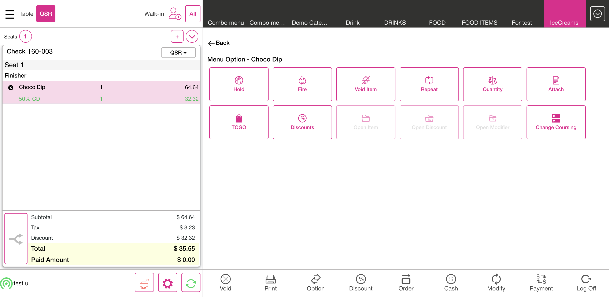FailCheck RoundOff value for menu item (exclusive tax) when check discount 100% (before tax) and item discount 50% (before tax) are applied.And I enter the pin in the pin screenAnd I have closed the order type windowAnd I have selected category arrowAnd Select the category "IceCreams"And Select the menu item "Choco Dip"And Verify if the ExcTax "0.10000" is calculated correctlyAnd I click Discount as "100% CD"And I selected cancel buttonAnd Verify if tax is calculated properly and calculate roundOff for check discount "1.0" exclusive "0.1"And I click Discount as "50% ID"And I selected cancel buttonAnd Verify if the discount is calculated correctly after 100 percent discount is appliedAnd Verify if the balance due amount is displayed correctlyStep skippedAnd Verify if the balance due amount is displayed correctly after the payment doneStep skippedAnd I click log off button in order screenStep skippedcom.qa.stepdef.Hooks.quit(io.cucumber.java.Scenario)FailCheck RoundOff value for menu item (exclusive tax) when mix and match discount 50% (before tax) and mix & match discount 100% (before tax) are applied.And I enter the pin in the pin screenAnd I have closed the order type windowStep skippedAnd I have selected category arrowStep skippedAnd Select the category "IceCreams"Step skippedAnd Select the menu item "Choco Dip"Step skippedAnd Verify if the ExcTax "0.10000" is calculated correctlyStep skippedAnd I click Discount as "Mix 50%"Step skippedAnd I selected cancel buttonStep skippedAnd Verify if tax is calculated properly and calculate roundOff for check discount "0.50" exclusive "0.10"Step skippedAnd I click Discount as "Mix 100%"Step skippedAnd I selected cancel buttonStep skippedAnd Verify if tax is calculated properly and calculate roundOff for check discount "1.00" exclusive "0.10"Step skippedAnd Verify if the discount is calculated correctly after 100 percent discount is appliedStep skippedAnd Verify if the balance due amount is displayed correctlyStep skippedAnd Verify if the balance due amount is displayed correctly after the payment doneStep skippedAnd I click log off button in order screenStep skippedcom.qa.stepdef.Hooks.quit(io.cucumber.java.Scenario)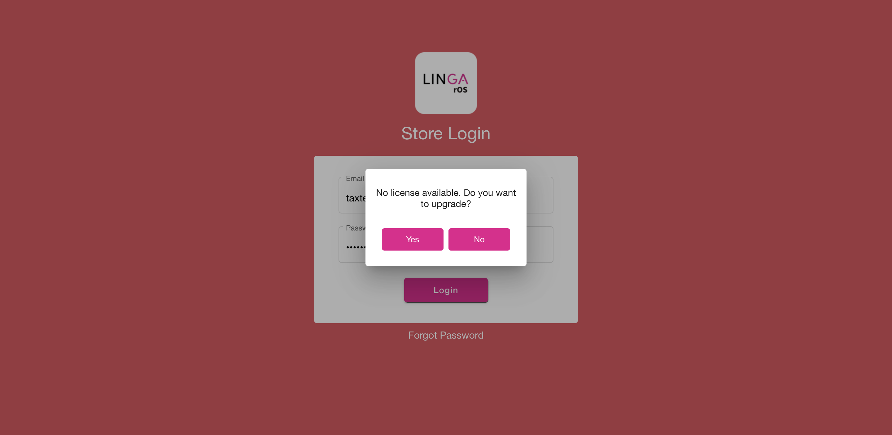FailCheck RoundOff value for menu item (exclusive tax) when item discount 50% (before tax) and item discount 100% (before tax) are applied.And I enter the pin in the pin screenAnd I have closed the order type windowAnd I have selected category arrowAnd Select the category "IceCreams"And Select the menu item "Choco Dip"And Verify if the ExcTax "0.10000" is calculated correctlyAnd I click Discount as "50% ID"And I selected cancel buttonAnd Verify if tax is calculated properly and calculate roundOff for check discount "0.50" exclusive "0.10"And I click Discount as "100% ID"And I selected cancel buttonAnd Verify if tax is calculated properly and calculate roundOff for check discount "1.00" exclusive "0.10"And Verify if the discount is calculated correctly after 100 percent discount is appliedAnd Verify if the balance due amount is displayed correctlyStep skippedAnd Verify if the balance due amount is displayed correctly after the payment doneStep skippedAnd I click log off button in order screenStep skippedcom.qa.stepdef.Hooks.quit(io.cucumber.java.Scenario)FailCheck RoundOff value for menu item (exclusive tax) when check discount 50% (before tax) and check discount 100% (before tax) are applied.And I enter the pin in the pin screenAnd I have closed the order type windowAnd I have selected category arrowAnd Select the category "IceCreams"And Select the menu item "Choco Dip"And Verify if the ExcTax "0.10000" is calculated correctlyAnd I click Discount as "50% CD"And I selected cancel buttonAnd Verify if tax is calculated properly and calculate roundOff for check discount "0.50" exclusive "0.10"And I click Discount as "100% CD"And I selected cancel buttonAnd Verify if tax is calculated properly and calculate roundOff for check discount "1.00" exclusive "0.10"And Verify if the discount is calculated correctly after 100 percent discount is appliedAnd Verify if the balance due amount is displayed correctlyStep skippedAnd Verify if the balance due amount is displayed correctly after the payment doneStep skippedAnd I click log off button in order screenStep skippedcom.qa.stepdef.Hooks.quit(io.cucumber.java.Scenario)FailUnable to apply Open Item Discount when multiple seats are there and check level view is selected -> LIN-22629And I enter the pin in the pin screenAnd I have closed the order type windowAnd I have selected category arrowAnd Select the category "IceCreams"And Select the menu item "Pista IceCream"And I click Done button on the open item windowAnd I selected menu optionsAnd I selected Open DiscountAnd I tapped the percentage fieldAnd I entered the discount percentageAnd I selected the Continue buttonAnd I tapped reason and entered the reasonAnd I selected the apply buttonAnd Verify If Tax "0.1345" Is Calculated Properly And Calculate RoundOff for Open Discount "0.08888" ExclusiveAnd I added another seatAnd I have selected category arrowAnd Select the category "IceCreams"And Select the menu item "Pista IceCream"And I click Done button on the open item windowAnd I selected the QSR buttonAnd I selected menu options2 discountAnd I selected Open DiscountAnd I tapped the percentage fieldAnd I entered the discount percentageStep skippedAnd I selected the Continue buttonStep skippedAnd I tapped reason and entered the reasonStep skippedAnd I selected the apply buttonStep skippedAnd Verify If Tax "0.1345" Is Calculated Properly And Calculate RoundOff for Open Discount "0.08888" ExclusiveStep skippedAnd Verify if the balance due amount is displayed correctlyStep skippedAnd Verify if the balance due amount is displayed correctly after the paymentStep skippedAnd I click log off button in order screenStep skippedcom.qa.stepdef.Hooks.quit(io.cucumber.java.Scenario)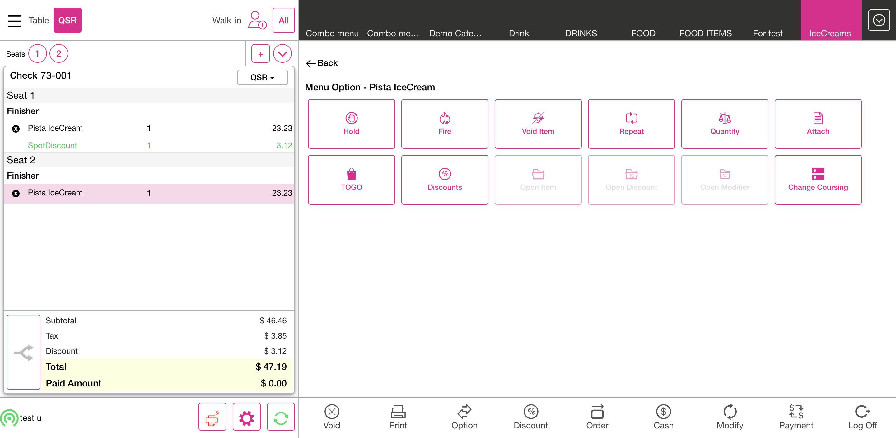FailCheck Tax is calculated wrongly when menu is placed along with modifiers and if discount is applied -> LIN-22203And I enter the pin in the pin screenAnd I have closed the order type windowAnd I have selected category arrowAnd Select the category "IceCreams"And Select the menu item "Tuity fruity"And Check the amount of menu item "300.00"And I selected the modifier2 "Mango Pulp"And I click Discount as "20% Item Discount"And I selected cancel buttonAnd Verify if exclusive tax menu "0.05555" exclusive tax modifier "0.07777" check tax "0.12444" and discount "0.20" are calculated properlyAnd Verify if the balance due amount is displayed correctlyStep skippedAnd Verify if the balance due amount is displayed correctly after the paymentStep skippedAnd I click log off button in order screenStep skippedcom.qa.stepdef.Hooks.quit(io.cucumber.java.Scenario)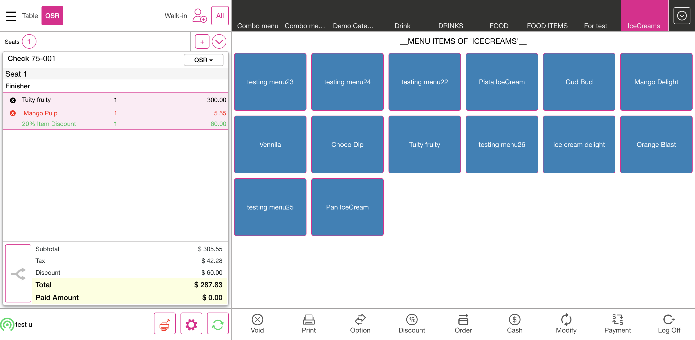PassCombo discount is not working when we have menu item with mandatory modifier in the match -> LIN-22328And I enter the pin in the pin screenAnd I have closed the order type windowAnd I have selected category arrowAnd Select the category "COMBO"And Select the menu item "Ice Cream Combo"And Select the combo menu item "Orange Blast"And I selected the modifier2 "Orange Pulp"And I click Done button on the open item windowAnd I click Done button on the open item windowAnd Verify if exclusive tax menu "0.05555" exclusive tax modifier "0.02121" and percentage discount "0.3333" are calculated properlyAnd Verify if the balance due amount is displayed correctlyAnd Verify if the balance due amount is displayed correctly after the paymentAnd I click log off button in order screenPassTS-10 -> Check tax missing while user click start over in the modifier selection screenAnd I enter the pin in the pin screenAnd I have closed the order type windowAnd I have selected category arrowAnd Select the category "IceCreams"And Select the menu item "Pan IceCream"And Verify if the CheckTax is calculated correctly and calculate round-offAnd I click Start Over button on the open item windowAnd I click Done button on the open item windowAnd Verify if the CheckTax is calculated correctly and calculate round-offAnd Verify if the total value is calculated correctlyAnd Verify if the balance due value is calculated correctlyAnd Verify if the balance due value is displayed correctly after paymentAnd I click log off button in order screenPassTS-11 -> Open Discount not shows while reopening the check & hence shows Balance dueAnd I enter the pin in the pin screenAnd I have closed the order type windowAnd I get check numberAnd I have selected category arrowAnd Select the category "FOOD ITEMS"And Select the menu item "testing menu15"And I selected menu optionsAnd I selected Open DiscountAnd I tapped the percentage fieldAnd I entered the discount percentageAnd I selected the Continue buttonAnd I tapped reason and entered the reasonAnd I selected the apply buttonAnd Verify If Tax "0.1345" Is Calculated Properly And Calculate RoundOff for Open Discount "0.10255" ExclusiveAnd Verify if the total amount is calculated correctly for exclusive open discountAnd Verify if the balance due amount is displayed correctlyAnd Verify if the balance due amount is displayed correctly after the paymentAnd Select the All optionAnd I click Closed tab on the Check statsThen I should see closed check in closed check tabAnd I click reopen check button on the check stats screenAnd Verify If Tax "0.1345" Is Calculated Properly And Calculate RoundOff for Open Discount "0.10255" ExclusiveAnd Verify if the total amount is calculated correctly for exclusive open discountAnd Verify if the balance due amount is displayed correctly reopen payment done alreadyAnd I Selected submit buttonAnd I click log off button in order screenPassTS-12 -> Unable to change the serving size after place menu item, its added new on the selectionAnd I enter the pin in the pin screenAnd I have closed the order type windowAnd I have selected category arrowAnd Select the category "PIZZA"And Select the menu item "PEPPERONI PIZZA"And I selected the serving size as "MEDIUM"And I click Done button on the open item windowAnd I selected menu optionsAnd I selected the back buttonAnd I selected the serving size as "SMALL"And I click Done button on the open item windowAnd Verify if exclusive tax "0.05623" is calculated properly and calculate roundoffAnd Verify if the total value is calculated correctlyAnd Verify if the balance due value is calculated correctlyAnd Verify if the balance due value is displayed correctly after paymentAnd I click log off button in order screenFailTS-4 -> Unable to apply the item discount for special menu itemAnd I enter the pin in the pin screenAnd I have closed the order type windowAnd I have selected category arrowAnd Select the category "PIZZA"And Select the menu item "Special Combo Menu"And Select the menu item "pizza supreme"And Select the menu item "pizza dominator"And I click Discount as "20% Discount"And I selected cancel buttonAnd Verify if tax "0.20" "0.0622" is calculated properly and calculate round-offAnd Verify if the total amount is calculated correctlyStep skippedAnd Verify if the balance due amount is calculated correctlyStep skippedAnd Verify if the balance due amount is displayed correctly after paymentStep skippedAnd I click log off button in order screenStep skippedcom.qa.stepdef.Hooks.quit(io.cucumber.java.Scenario)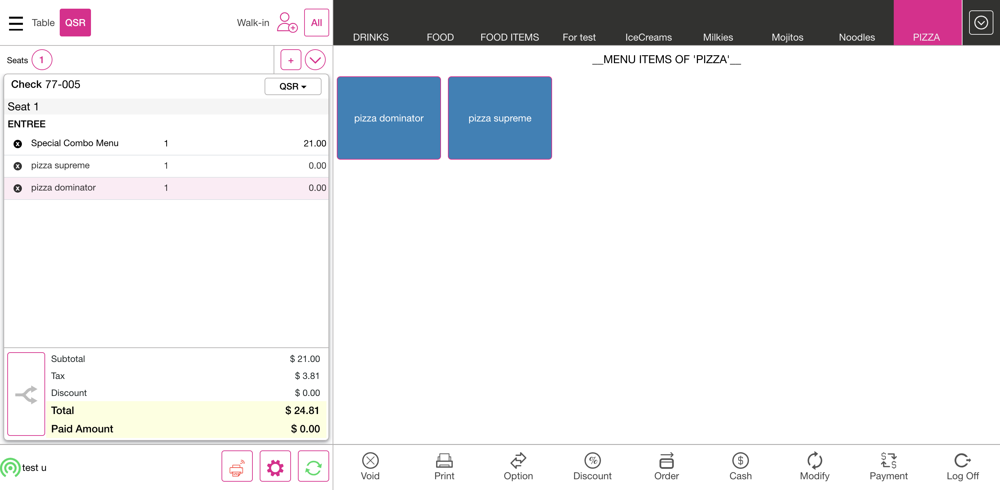PassTS-14 -> Unable to add discount again while void the menu item partiallyAnd I enter the pin in the pin screenAnd I have closed the order type windowAnd I have selected category arrowAnd Select the category "FOOD ITEMS"And Select the menu item "testing menu33"And I selected the modifier "Bbq"And I click Done button on the open item windowAnd I selected quantity as "5"And I click Discount as "20% Discount"And I selected cancel buttonAnd I selected order buttonAnd I selected menu optionsAnd I selected void button in menu optionsAnd I selected void quantity as "2"And Select the Void item reason as "Server Error"And Verify if tax "0.20" "0.05623" is calculated properly and calculate round-offAnd I click Discount as "20% Discount"And I selected cancel buttonAnd I click Discount as "20% Discount"And I selected cancel buttonAnd Verify if tax "0.20" "0.05623" is calculated properly and calculate round-offAnd Verify if the total amount is calculated correctlyAnd Verify if the balance due amount is calculated correctlyAnd Verify if the balance due amount is displayed correctly after paymentAnd I click log off button in order screen
-
org.junit.ComparisonFailure
1 tests
org.junit.ComparisonFailure
1 failedStatus Timestamp TestName Fail 15:43:24 PM And Verify if the total value is calculated correctly for both inclusive and exclusive tax TaxRoundOff.Check RoundOff value for menu item with both inclusive and exclusive tax.And Verify if the total value is calculated correctly for both inclusive and exclusive taxFail 15:46:54 PM And Verify If Tax "0.10255" and discount "0.4567" Is Calculated Properly And Calculate RoundOff for item discount after tax Exclusive TaxRoundOff.Check RoundOff value for menu item with exclusive tax with item discount after tax.And Verify If Tax "0.10255" and discount "0.4567" Is Calculated Properly And Calculate RoundOff for item discount after tax ExclusiveFail 15:47:56 PM And Verify If Tax "17.62" and discount "0.4567" Is Calculated Properly And Calculate RoundOff for item discount after tax Inclusive TaxRoundOff.Check RoundOff value for menu item with inclusive tax with item discount after tax.And Verify If Tax "17.62" and discount "0.4567" Is Calculated Properly And Calculate RoundOff for item discount after tax InclusiveFail 16:00:54 PM And Verify if exclusive taxes "0.23765" and "0.10255" are calculated properly and calculate roundoff TaxRoundOff.Verify tax and round off for exclusive menu item after doing merge seats.And Verify if exclusive taxes "0.23765" and "0.10255" are calculated properly and calculate roundoffFail 16:02:16 PM And Verify if tax is calculated properly and calculate roundOff for check discount "0.20" exclusive "0.10255" and "0.10255" TaxRoundOff.Verify tax and round off for exclusive menu item after doing merge seats applying check discount.And Verify if tax is calculated properly and calculate roundOff for check discount "0.20" exclusive "0.10255" and "0.10255"Fail 16:03:37 PM And Verify if the CheckTax "0.12444" is calculated correctly and calculate round-off multiple menu TaxRoundOff.Verify tax and round off for exclusive and check tax menu item after doing merge seats.And Verify if the CheckTax "0.12444" is calculated correctly and calculate round-off multiple menuFail 16:09:07 PM And Verify if inclusive tax menu "0.35000" inclusive tax modifier "0.08655" and discount "14.55" are calculated properly TaxRoundOff.Check RoundOff value for menu item (inclusive tax) along with modifier (inclusive tax) applying open item discount (amount BT).And Verify if inclusive tax menu "0.35000" inclusive tax modifier "0.08655" and discount "14.55" are calculated properlyFail 16:15:09 PM And Verify if exclusive tax "0.17174" is calculated properly when check discounts "0.20" and "0.30" are applied and calculate round-off TaxRoundOff.Tax roundoff with exclusive menu item when multiple check discounts are applied.And Verify if exclusive tax "0.17174" is calculated properly when check discounts "0.20" and "0.30" are applied and calculate round-offFail 16:16:24 PM And Verify if exclusive tax "0.17174" is calculated properly when item discounts "0.2727" and "0.2222" are applied and calculate round-off after tax TaxRoundOff.Tax roundoff with exclusive menu item when multiple check discounts are applied percentage AT.And Verify if exclusive tax "0.17174" is calculated properly when item discounts "0.2727" and "0.2222" are applied and calculate round-off after taxFail 16:17:41 PM And Verify exc tax "0.17174" when multiple mix and match discounts set price are applied "120.00" and "100.00" TaxRoundOff.Tax roundoff with exclusive menu item when multiple mix and match discounts are applied set price BT.And Verify exc tax "0.17174" when multiple mix and match discounts set price are applied "120.00" and "100.00"Fail 16:18:41 PM And Verify exc tax "0.17174" when multiple mix and match discounts set price after tax are applied "120.00" and "100.00" TaxRoundOff.Tax roundoff with exclusive menu item when multiple mix and match discounts are applied set price AT.And Verify exc tax "0.17174" when multiple mix and match discounts set price after tax are applied "120.00" and "100.00"Fail 16:19:47 PM And Verify inc tax "0.14140" when multiple mix and match discounts set price are applied "120.00" and "100.00" TaxRoundOff.Tax roundoff with inclusive menu item when multiple mix and match discounts are applied set price BT.And Verify inc tax "0.14140" when multiple mix and match discounts set price are applied "120.00" and "100.00"Fail 16:20:47 PM And Verify inc tax "0.14140" when multiple mix and match discounts set price are applied after tax "120.00" and "100.00" TaxRoundOff.Tax roundoff with inclusive menu item when multiple mix and match discounts are applied set price AT.And Verify inc tax "0.14140" when multiple mix and match discounts set price are applied after tax "120.00" and "100.00"Fail 16:21:49 PM And Verify exc tax "0.17174" when multiple mix and match discounts percentage are applied "10.12" and "6.34" TaxRoundOff.Tax roundoff with exclusive menu item when multiple mix and match discounts are applied percentage BT.And Verify exc tax "0.17174" when multiple mix and match discounts percentage are applied "10.12" and "6.34"Fail 16:22:49 PM And Verify exc tax "0.17174" when multiple mix and match discounts percentage are applied AT "13.11" and "21.11" TaxRoundOff.Tax roundoff with exclusive menu item when multiple mix and match discounts are applied percentage AT.And Verify exc tax "0.17174" when multiple mix and match discounts percentage are applied AT "13.11" and "21.11"Fail 16:25:44 PM And Verify if the discount is calculated correctly after 100 percent discount is applied TaxRoundOff.Check RoundOff value for menu item (exclusive tax) when check discount 100% (before tax) and item discount 50% (before tax) are applied..And Verify if the discount is calculated correctly after 100 percent discount is appliedFail 16:28:06 PM And Verify if the discount is calculated correctly after 100 percent discount is applied TaxRoundOff.Check RoundOff value for menu item (exclusive tax) when item discount 50% (before tax) and item discount 100% (before tax) are applied..And Verify if the discount is calculated correctly after 100 percent discount is appliedFail 16:29:08 PM And Verify if the discount is calculated correctly after 100 percent discount is applied TaxRoundOff.Check RoundOff value for menu item (exclusive tax) when check discount 50% (before tax) and check discount 100% (before tax) are applied..And Verify if the discount is calculated correctly after 100 percent discount is appliedFail 16:31:33 PM And Verify if exclusive tax menu "0.05555" exclusive tax modifier "0.07777" check tax "0.12444" and discount "0.20" are calculated properly TaxRoundOff.Check Tax is calculated wrongly when menu is placed along with modifiers and if discount is applied -> LIN-22203.And Verify if exclusive tax menu "0.05555" exclusive tax modifier "0.07777" check tax "0.12444" and discount "0.20" are calculated properlyFail 16:34:12 PM And Verify if tax "0.20" "0.0622" is calculated properly and calculate round-off TaxRoundOff.TS-4 -> Unable to apply the item discount for special menu item.And Verify if tax "0.20" "0.0622" is calculated properly and calculate round-off -
org.openqa.selenium.ElementClickInterceptedException
1 tests
org.openqa.selenium.ElementClickInterceptedException
1 failedStatus Timestamp TestName Fail 16:11:53 PM And Select the combo menu item "testing menu18" TaxRoundOff.LIN-21678 - Combo - Unable to get menu items (Inclusive).And Select the combo menu item "testing menu18" -
org.openqa.selenium.NoSuchElementException
1 tests
org.openqa.selenium.NoSuchElementException
1 failedStatus Timestamp TestName Fail 15:55:26 PM And I selected cancel button TaxRoundOff.Verify tax and round off after reopening check and deleting discount inclusive.And I selected cancel buttonFail 16:10:22 PM And I enter the pin in the pin screen TaxRoundOff.Check RoundOff value for menu item ($0) along with modifier (exclusive tax).And I enter the pin in the pin screenFail 16:24:39 PM And I tapped the percentage field TaxRoundOff.Check RoundOff value for menu item (exclusive tax) when check discount 50% (before tax) and open item discount 100% (before tax) are applied..And I tapped the percentage fieldFail 16:26:33 PM And I enter the pin in the pin screen TaxRoundOff.Check RoundOff value for menu item (exclusive tax) when mix and match discount 50% (before tax) and mix & match discount 100% (before tax) are applied..And I enter the pin in the pin screenFail 16:30:22 PM And I tapped the percentage field TaxRoundOff.Unable to apply Open Item Discount when multiple seats are there and check level view is selected -> LIN-22629.And I tapped the percentage field
-
@tic1
1 tests
@tic1
1 passedStatus Timestamp TestName Pass 16:33:24 PM TS-12 -> Unable to change the serving size after place menu item, its added new on the selection TaxRoundOff.TS-12 -> Unable to change the serving size after place menu item, its added new on the selection -
@cod
1 tests
@cod
1 passedStatus Timestamp TestName Pass 16:31:33 PM Combo discount is not working when we have menu item with mandatory modifier in the match -> LIN-22328 TaxRoundOff.Combo discount is not working when we have menu item with mandatory modifier in the match -> LIN-22328 -
@basicTaxScenarios
74 tests
@basicTaxScenarios
58 passed 16 failedStatus Timestamp TestName Pass 15:40:21 PM Check tax and RoundOff value for menu item with quantity tax TaxRoundOff.Check tax and RoundOff value for menu item with quantity taxPass 15:41:49 PM Check tax and RoundOff value for menu item with inclusive tax TaxRoundOff.Check tax and RoundOff value for menu item with inclusive taxPass 15:42:02 PM Check tax and RoundOff value for menu item with exclusive tax TaxRoundOff.Check tax and RoundOff value for menu item with exclusive taxPass 15:42:16 PM Check tax and RoundOff value for menu item when item discount is applied (exclusive) TaxRoundOff.Check tax and RoundOff value for menu item when item discount is applied (exclusive)Pass 15:42:30 PM Check tax and RoundOff value for menu item when item discount is applied (inclusive) TaxRoundOff.Check tax and RoundOff value for menu item when item discount is applied (inclusive)Pass 15:42:44 PM Check RoundOff value for open item (exclusive) TaxRoundOff.Check RoundOff value for open item (exclusive)Pass 15:42:49 PM Check RoundOff value for open item (inclusive) TaxRoundOff.Check RoundOff value for open item (inclusive)Pass 15:42:53 PM Check RoundOff value for menu item (check tax) TaxRoundOff.Check RoundOff value for menu item (check tax)Pass 15:43:08 PM Check RoundOff value for open item (check tax) TaxRoundOff.Check RoundOff value for open item (check tax)Fail 15:43:12 PM Check RoundOff value for menu item with both inclusive and exclusive tax TaxRoundOff.Check RoundOff value for menu item with both inclusive and exclusive taxPass 15:43:24 PM Check RoundOff value for menu item with both inclusive and exclusive tax with discount TaxRoundOff.Check RoundOff value for menu item with both inclusive and exclusive tax with discountPass 15:44:33 PM Check RoundOff value for menu item with exclusive tax with discount amount TaxRoundOff.Check RoundOff value for menu item with exclusive tax with discount amountPass 15:44:48 PM Check RoundOff value for menu item with inclusive tax with discount amount TaxRoundOff.Check RoundOff value for menu item with inclusive tax with discount amountPass 15:45:03 PM Check RoundOff value for menu item with exclusive tax with set price TaxRoundOff.Check RoundOff value for menu item with exclusive tax with set pricePass 15:45:17 PM Check RoundOff value for menu item with inclusive tax with set price TaxRoundOff.Check RoundOff value for menu item with inclusive tax with set pricePass 15:45:32 PM Check RoundOff value for menu item with exclusive tax with check discount TaxRoundOff.Check RoundOff value for menu item with exclusive tax with check discountPass 15:45:51 PM Check RoundOff value for menu item with inclusive tax with check discount TaxRoundOff.Check RoundOff value for menu item with inclusive tax with check discountPass 15:46:10 PM Check RoundOff value for menu item with exclusive tax with open item discount TaxRoundOff.Check RoundOff value for menu item with exclusive tax with open item discountPass 15:46:26 PM Check RoundOff value for menu item with inclusive tax with open item discount TaxRoundOff.Check RoundOff value for menu item with inclusive tax with open item discountFail 15:46:42 PM Check RoundOff value for menu item with exclusive tax with item discount after tax TaxRoundOff.Check RoundOff value for menu item with exclusive tax with item discount after taxFail 15:46:54 PM Check RoundOff value for menu item with inclusive tax with item discount after tax TaxRoundOff.Check RoundOff value for menu item with inclusive tax with item discount after taxPass 15:47:56 PM Check RoundOff value for menu item with tax on item tax Exclusive TaxRoundOff.Check RoundOff value for menu item with tax on item tax ExclusivePass 15:49:00 PM Check RoundOff value for menu item with tax on item tax Inclusive TaxRoundOff.Check RoundOff value for menu item with tax on item tax InclusivePass 15:49:14 PM Check RoundOff value for menu item with exclusive tax and mix and match discount TaxRoundOff.Check RoundOff value for menu item with exclusive tax and mix and match discountPass 15:49:28 PM Check RoundOff value for menu item with inclusive tax and mix and match discount TaxRoundOff.Check RoundOff value for menu item with inclusive tax and mix and match discountPass 15:49:43 PM Check RoundOff value for menu item with exclusive tax, inclusive tax modifier and mix and match discount Percentage TaxRoundOff.Check RoundOff value for menu item with exclusive tax, inclusive tax modifier and mix and match discount PercentagePass 15:50:12 PM Check RoundOff value for menu item with exclusive tax and free item discount TaxRoundOff.Check RoundOff value for menu item with exclusive tax and free item discountPass 15:50:32 PM Check RoundOff value for menu item with inclusive tax and free item discount TaxRoundOff.Check RoundOff value for menu item with inclusive tax and free item discountPass 15:50:51 PM Check RoundOff value for menu item with both exclusive and inclusive tax with free item discount TaxRoundOff.Check RoundOff value for menu item with both exclusive and inclusive tax with free item discountPass 15:51:05 PM Check RoundOff value for menu item with exclusive tax when tax is exempted TaxRoundOff.Check RoundOff value for menu item with exclusive tax when tax is exemptedPass 15:51:18 PM Check RoundOff value for menu item with inclusive tax when tax is exempted TaxRoundOff.Check RoundOff value for menu item with inclusive tax when tax is exemptedPass 15:51:31 PM Check RoundOff value for menu item with both inclusive and exclusive tax when tax is exempted TaxRoundOff.Check RoundOff value for menu item with both inclusive and exclusive tax when tax is exemptedPass 15:51:45 PM Check RoundOff value for menu item after reopening check and adding new menu item Exc TaxRoundOff.Check RoundOff value for menu item after reopening check and adding new menu item ExcPass 15:52:15 PM Check RoundOff value for menu item after reopening check and adding new menu item Inc TaxRoundOff.Check RoundOff value for menu item after reopening check and adding new menu item IncPass 15:52:44 PM Check RoundOff value for menu item after reopening check and submitting TaxRoundOff.Check RoundOff value for menu item after reopening check and submittingPass 15:53:03 PM Check RoundOff value for menu item after reopening check and voiding TaxRoundOff.Check RoundOff value for menu item after reopening check and voidingPass 15:53:21 PM Check tax and RoundOff value for menu item with quantity tax along with rounding off TaxRoundOff.Check tax and RoundOff value for menu item with quantity tax along with rounding offPass 15:54:14 PM Verify tax and round off for exclusive menu item and inclusive tax modifier TaxRoundOff.Verify tax and round off for exclusive menu item and inclusive tax modifierPass 15:59:16 PM Check tax and RoundOff value for menu item with inclusive tax 2 TaxRoundOff.Check tax and RoundOff value for menu item with inclusive tax 2Pass 15:59:29 PM Check tax and RoundOff value after adding multiple menu items with exclusive tax and voiding one menu item TaxRoundOff.Check tax and RoundOff value after adding multiple menu items with exclusive tax and voiding one menu itemPass 15:59:54 PM Check tax and RoundOff value after adding multiple menu items with inclusive tax and voiding one menu item TaxRoundOff.Check tax and RoundOff value after adding multiple menu items with inclusive tax and voiding one menu itemFail 16:00:18 PM Verify tax and round off for exclusive menu item after doing merge seats TaxRoundOff.Verify tax and round off for exclusive menu item after doing merge seatsFail 16:00:55 PM Verify tax and round off for exclusive menu item after doing merge seats applying check discount TaxRoundOff.Verify tax and round off for exclusive menu item after doing merge seats applying check discountFail 16:02:17 PM Verify tax and round off for exclusive and check tax menu item after doing merge seats TaxRoundOff.Verify tax and round off for exclusive and check tax menu item after doing merge seatsPass 16:03:39 PM Verify tax and round off for exclusive menu item applying 100% discount TaxRoundOff.Verify tax and round off for exclusive menu item applying 100% discountPass 16:04:43 PM Verify tax and round off for inclusive menu item applying 100% discount TaxRoundOff.Verify tax and round off for inclusive menu item applying 100% discountPass 16:04:57 PM Verify tax and round off for both exclusive and inclusive tax menu item applying 100% discount TaxRoundOff.Verify tax and round off for both exclusive and inclusive tax menu item applying 100% discountPass 16:05:10 PM Verify tax and roundoff after doing repeat order inclusive TaxRoundOff.Verify tax and roundoff after doing repeat order inclusivePass 16:05:23 PM Verify tax and roundoff after doing repeat order exclusive TaxRoundOff.Verify tax and roundoff after doing repeat order exclusivePass 16:05:36 PM Verify tax and roundoff after placing menu items with check discount and reopen to void some menu items TaxRoundOff.Verify tax and roundoff after placing menu items with check discount and reopen to void some menu itemsPass 16:06:04 PM Verify tax and roundoff after placing menu items with check discount then reopen to void some menu items and again reopen to void the check TaxRoundOff.Verify tax and roundoff after placing menu items with check discount then reopen to void some menu items and again reopen to void the checkPass 16:06:41 PM Verify tax and roundoff after placing menu items with exclusive tax and item service charge TaxRoundOff.Verify tax and roundoff after placing menu items with exclusive tax and item service chargePass 16:07:00 PM Verify tax and roundoff after placing menu items with inclusive tax and item service charge TaxRoundOff.Verify tax and roundoff after placing menu items with inclusive tax and item service chargePass 16:07:19 PM Check RoundOff value for menu item with exclusive tax with open item discount (amount BT) TaxRoundOff.Check RoundOff value for menu item with exclusive tax with open item discount (amount BT)Pass 16:07:35 PM Check RoundOff value for menu item with inclusive tax with open item discount (amount BT) TaxRoundOff.Check RoundOff value for menu item with inclusive tax with open item discount (amount BT)Pass 16:07:51 PM Check RoundOff value for menu item with exclusive tax with open item discount (percentage AT) TaxRoundOff.Check RoundOff value for menu item with exclusive tax with open item discount (percentage AT)Pass 16:08:07 PM Check RoundOff value for menu item with inclusive tax with open item discount (percentage AT) TaxRoundOff.Check RoundOff value for menu item with inclusive tax with open item discount (percentage AT)Pass 16:08:23 PM Check RoundOff value for menu item (exclusive tax) along with modifier (exclusive tax) applying open item discount (amount BT) TaxRoundOff.Check RoundOff value for menu item (exclusive tax) along with modifier (exclusive tax) applying open item discount (amount BT)Fail 16:08:44 PM Check RoundOff value for menu item (inclusive tax) along with modifier (inclusive tax) applying open item discount (amount BT) TaxRoundOff.Check RoundOff value for menu item (inclusive tax) along with modifier (inclusive tax) applying open item discount (amount BT)Pass 16:09:08 PM Check RoundOff value for menu item (exclusive tax) along with modifier (exclusive tax) applying open item discount (amount BT) with include additional modifiers toggle disabled TaxRoundOff.Check RoundOff value for menu item (exclusive tax) along with modifier (exclusive tax) applying open item discount (amount BT) with include additional modifiers toggle disabledFail 16:10:22 PM Check RoundOff value for menu item ($0) along with modifier (exclusive tax) TaxRoundOff.Check RoundOff value for menu item ($0) along with modifier (exclusive tax)Pass 16:10:28 PM LIN-21678 - Combo - Unable to get menu items (Exclusive) TaxRoundOff.LIN-21678 - Combo - Unable to get menu items (Exclusive)Fail 16:11:40 PM LIN-21678 - Combo - Unable to get menu items (Inclusive) TaxRoundOff.LIN-21678 - Combo - Unable to get menu items (Inclusive)Pass 16:11:55 PM LIN-21716 Total amount shows wrong when user apply combo discount exclusive TaxRoundOff.LIN-21716 Total amount shows wrong when user apply combo discount exclusivePass 16:13:24 PM LIN-21716 Total amount shows wrong when user apply combo discount inclusive TaxRoundOff.LIN-21716 Total amount shows wrong when user apply combo discount inclusivePass 16:22:49 PM Verify if modifier price is displayed correctly if menu quantity is increased (set tiered price present for modifier). TaxRoundOff.Verify if modifier price is displayed correctly if menu quantity is increased (set tiered price present for modifier).Pass 16:24:02 PM Verify if modifier price is displayed correctly if modifier quantity is increased (set tiered price -> First 2 modifiers -> 2$ ALL). TaxRoundOff.Verify if modifier price is displayed correctly if modifier quantity is increased (set tiered price -> First 2 modifiers -> 2$ ALL).Fail 16:24:27 PM Check RoundOff value for menu item (exclusive tax) when check discount 50% (before tax) and open item discount 100% (before tax) are applied. TaxRoundOff.Check RoundOff value for menu item (exclusive tax) when check discount 50% (before tax) and open item discount 100% (before tax) are applied.Fail 16:24:44 PM Check RoundOff value for menu item (exclusive tax) when check discount 100% (before tax) and item discount 50% (before tax) are applied. TaxRoundOff.Check RoundOff value for menu item (exclusive tax) when check discount 100% (before tax) and item discount 50% (before tax) are applied.Fail 16:25:45 PM Check RoundOff value for menu item (exclusive tax) when mix and match discount 50% (before tax) and mix & match discount 100% (before tax) are applied. TaxRoundOff.Check RoundOff value for menu item (exclusive tax) when mix and match discount 50% (before tax) and mix & match discount 100% (before tax) are applied.Fail 16:27:03 PM Check RoundOff value for menu item (exclusive tax) when item discount 50% (before tax) and item discount 100% (before tax) are applied. TaxRoundOff.Check RoundOff value for menu item (exclusive tax) when item discount 50% (before tax) and item discount 100% (before tax) are applied.Fail 16:28:07 PM Check RoundOff value for menu item (exclusive tax) when check discount 50% (before tax) and check discount 100% (before tax) are applied. TaxRoundOff.Check RoundOff value for menu item (exclusive tax) when check discount 50% (before tax) and check discount 100% (before tax) are applied.Fail 16:29:08 PM Unable to apply Open Item Discount when multiple seats are there and check level view is selected -> LIN-22629 TaxRoundOff.Unable to apply Open Item Discount when multiple seats are there and check level view is selected -> LIN-22629Fail 16:30:27 PM Check Tax is calculated wrongly when menu is placed along with modifiers and if discount is applied -> LIN-22203 TaxRoundOff.Check Tax is calculated wrongly when menu is placed along with modifiers and if discount is applied -> LIN-22203 -
@basicTaxScenarios1
6 tests
@basicTaxScenarios1
5 passed 1 failedStatus Timestamp TestName Pass 15:54:44 PM Verify tax and round off after reopening check and deleting discount TaxRoundOff.Verify tax and round off after reopening check and deleting discountFail 15:55:04 PM Verify tax and round off after reopening check and deleting discount inclusive TaxRoundOff.Verify tax and round off after reopening check and deleting discount inclusivePass 15:55:37 PM Verify tax and round off for exclusive menu item and alternate modifier TaxRoundOff.Verify tax and round off for exclusive menu item and alternate modifierPass 15:56:49 PM Verify tax and round off for exclusive menu item and alternate modifier (with prefix) TaxRoundOff.Verify tax and round off for exclusive menu item and alternate modifier (with prefix)Pass 15:57:14 PM Verify tax and round off for inclusive menu item and alternate modifier (with prefix) TaxRoundOff.Verify tax and round off for inclusive menu item and alternate modifier (with prefix)Pass 15:57:43 PM Verify tax and round off for exclusive menu item after doing split by seat TaxRoundOff.Verify tax and round off for exclusive menu item after doing split by seat -
@basicTaxScenarios2
1 tests
@basicTaxScenarios2
1 passedStatus Timestamp TestName Pass 15:58:30 PM Verify tax and round off for inclusive menu item after doing split by seat TaxRoundOff.Verify tax and round off for inclusive menu item after doing split by seat -
@dddr
1 tests
@dddr
1 passedStatus Timestamp TestName Pass 16:33:00 PM TS-11 -> Open Discount not shows while reopening the check & hence shows Balance due TaxRoundOff.TS-11 -> Open Discount not shows while reopening the check & hence shows Balance due -
@TaxRoundOffTypeScriptWebPOS
103 tests
@TaxRoundOffTypeScriptWebPOS
75 passed 28 failedStatus Timestamp TestName Fail 15:40:21 PM TaxRoundOff Pass 15:40:21 PM Check tax and RoundOff value for menu item with quantity tax TaxRoundOff.Check tax and RoundOff value for menu item with quantity taxPass 15:41:49 PM Check tax and RoundOff value for menu item with inclusive tax TaxRoundOff.Check tax and RoundOff value for menu item with inclusive taxPass 15:42:02 PM Check tax and RoundOff value for menu item with exclusive tax TaxRoundOff.Check tax and RoundOff value for menu item with exclusive taxPass 15:42:16 PM Check tax and RoundOff value for menu item when item discount is applied (exclusive) TaxRoundOff.Check tax and RoundOff value for menu item when item discount is applied (exclusive)Pass 15:42:30 PM Check tax and RoundOff value for menu item when item discount is applied (inclusive) TaxRoundOff.Check tax and RoundOff value for menu item when item discount is applied (inclusive)Pass 15:42:44 PM Check RoundOff value for open item (exclusive) TaxRoundOff.Check RoundOff value for open item (exclusive)Pass 15:42:49 PM Check RoundOff value for open item (inclusive) TaxRoundOff.Check RoundOff value for open item (inclusive)Pass 15:42:53 PM Check RoundOff value for menu item (check tax) TaxRoundOff.Check RoundOff value for menu item (check tax)Pass 15:43:08 PM Check RoundOff value for open item (check tax) TaxRoundOff.Check RoundOff value for open item (check tax)Fail 15:43:12 PM Check RoundOff value for menu item with both inclusive and exclusive tax TaxRoundOff.Check RoundOff value for menu item with both inclusive and exclusive taxPass 15:43:24 PM Check RoundOff value for menu item with both inclusive and exclusive tax with discount TaxRoundOff.Check RoundOff value for menu item with both inclusive and exclusive tax with discountPass 15:44:33 PM Check RoundOff value for menu item with exclusive tax with discount amount TaxRoundOff.Check RoundOff value for menu item with exclusive tax with discount amountPass 15:44:48 PM Check RoundOff value for menu item with inclusive tax with discount amount TaxRoundOff.Check RoundOff value for menu item with inclusive tax with discount amountPass 15:45:03 PM Check RoundOff value for menu item with exclusive tax with set price TaxRoundOff.Check RoundOff value for menu item with exclusive tax with set pricePass 15:45:17 PM Check RoundOff value for menu item with inclusive tax with set price TaxRoundOff.Check RoundOff value for menu item with inclusive tax with set pricePass 15:45:32 PM Check RoundOff value for menu item with exclusive tax with check discount TaxRoundOff.Check RoundOff value for menu item with exclusive tax with check discountPass 15:45:51 PM Check RoundOff value for menu item with inclusive tax with check discount TaxRoundOff.Check RoundOff value for menu item with inclusive tax with check discountPass 15:46:10 PM Check RoundOff value for menu item with exclusive tax with open item discount TaxRoundOff.Check RoundOff value for menu item with exclusive tax with open item discountPass 15:46:26 PM Check RoundOff value for menu item with inclusive tax with open item discount TaxRoundOff.Check RoundOff value for menu item with inclusive tax with open item discountFail 15:46:42 PM Check RoundOff value for menu item with exclusive tax with item discount after tax TaxRoundOff.Check RoundOff value for menu item with exclusive tax with item discount after taxFail 15:46:54 PM Check RoundOff value for menu item with inclusive tax with item discount after tax TaxRoundOff.Check RoundOff value for menu item with inclusive tax with item discount after taxPass 15:47:56 PM Check RoundOff value for menu item with tax on item tax Exclusive TaxRoundOff.Check RoundOff value for menu item with tax on item tax ExclusivePass 15:49:00 PM Check RoundOff value for menu item with tax on item tax Inclusive TaxRoundOff.Check RoundOff value for menu item with tax on item tax InclusivePass 15:49:14 PM Check RoundOff value for menu item with exclusive tax and mix and match discount TaxRoundOff.Check RoundOff value for menu item with exclusive tax and mix and match discountPass 15:49:28 PM Check RoundOff value for menu item with inclusive tax and mix and match discount TaxRoundOff.Check RoundOff value for menu item with inclusive tax and mix and match discountPass 15:49:43 PM Check RoundOff value for menu item with exclusive tax, inclusive tax modifier and mix and match discount Percentage TaxRoundOff.Check RoundOff value for menu item with exclusive tax, inclusive tax modifier and mix and match discount PercentagePass 15:50:12 PM Check RoundOff value for menu item with exclusive tax and free item discount TaxRoundOff.Check RoundOff value for menu item with exclusive tax and free item discountPass 15:50:32 PM Check RoundOff value for menu item with inclusive tax and free item discount TaxRoundOff.Check RoundOff value for menu item with inclusive tax and free item discountPass 15:50:51 PM Check RoundOff value for menu item with both exclusive and inclusive tax with free item discount TaxRoundOff.Check RoundOff value for menu item with both exclusive and inclusive tax with free item discountPass 15:51:05 PM Check RoundOff value for menu item with exclusive tax when tax is exempted TaxRoundOff.Check RoundOff value for menu item with exclusive tax when tax is exemptedPass 15:51:18 PM Check RoundOff value for menu item with inclusive tax when tax is exempted TaxRoundOff.Check RoundOff value for menu item with inclusive tax when tax is exemptedPass 15:51:31 PM Check RoundOff value for menu item with both inclusive and exclusive tax when tax is exempted TaxRoundOff.Check RoundOff value for menu item with both inclusive and exclusive tax when tax is exemptedPass 15:51:45 PM Check RoundOff value for menu item after reopening check and adding new menu item Exc TaxRoundOff.Check RoundOff value for menu item after reopening check and adding new menu item ExcPass 15:52:15 PM Check RoundOff value for menu item after reopening check and adding new menu item Inc TaxRoundOff.Check RoundOff value for menu item after reopening check and adding new menu item IncPass 15:52:44 PM Check RoundOff value for menu item after reopening check and submitting TaxRoundOff.Check RoundOff value for menu item after reopening check and submittingPass 15:53:03 PM Check RoundOff value for menu item after reopening check and voiding TaxRoundOff.Check RoundOff value for menu item after reopening check and voidingPass 15:53:21 PM Check tax and RoundOff value for menu item with quantity tax along with rounding off TaxRoundOff.Check tax and RoundOff value for menu item with quantity tax along with rounding offPass 15:54:14 PM Verify tax and round off for exclusive menu item and inclusive tax modifier TaxRoundOff.Verify tax and round off for exclusive menu item and inclusive tax modifierPass 15:54:44 PM Verify tax and round off after reopening check and deleting discount TaxRoundOff.Verify tax and round off after reopening check and deleting discountFail 15:55:04 PM Verify tax and round off after reopening check and deleting discount inclusive TaxRoundOff.Verify tax and round off after reopening check and deleting discount inclusivePass 15:55:37 PM Verify tax and round off for exclusive menu item and alternate modifier TaxRoundOff.Verify tax and round off for exclusive menu item and alternate modifierPass 15:56:49 PM Verify tax and round off for exclusive menu item and alternate modifier (with prefix) TaxRoundOff.Verify tax and round off for exclusive menu item and alternate modifier (with prefix)Pass 15:57:14 PM Verify tax and round off for inclusive menu item and alternate modifier (with prefix) TaxRoundOff.Verify tax and round off for inclusive menu item and alternate modifier (with prefix)Pass 15:57:43 PM Verify tax and round off for exclusive menu item after doing split by seat TaxRoundOff.Verify tax and round off for exclusive menu item after doing split by seatPass 15:58:30 PM Verify tax and round off for inclusive menu item after doing split by seat TaxRoundOff.Verify tax and round off for inclusive menu item after doing split by seatPass 15:59:16 PM Check tax and RoundOff value for menu item with inclusive tax 2 TaxRoundOff.Check tax and RoundOff value for menu item with inclusive tax 2Pass 15:59:29 PM Check tax and RoundOff value after adding multiple menu items with exclusive tax and voiding one menu item TaxRoundOff.Check tax and RoundOff value after adding multiple menu items with exclusive tax and voiding one menu itemPass 15:59:54 PM Check tax and RoundOff value after adding multiple menu items with inclusive tax and voiding one menu item TaxRoundOff.Check tax and RoundOff value after adding multiple menu items with inclusive tax and voiding one menu itemFail 16:00:18 PM Verify tax and round off for exclusive menu item after doing merge seats TaxRoundOff.Verify tax and round off for exclusive menu item after doing merge seatsFail 16:00:55 PM Verify tax and round off for exclusive menu item after doing merge seats applying check discount TaxRoundOff.Verify tax and round off for exclusive menu item after doing merge seats applying check discountFail 16:02:17 PM Verify tax and round off for exclusive and check tax menu item after doing merge seats TaxRoundOff.Verify tax and round off for exclusive and check tax menu item after doing merge seatsPass 16:03:39 PM Verify tax and round off for exclusive menu item applying 100% discount TaxRoundOff.Verify tax and round off for exclusive menu item applying 100% discountPass 16:04:43 PM Verify tax and round off for inclusive menu item applying 100% discount TaxRoundOff.Verify tax and round off for inclusive menu item applying 100% discountPass 16:04:57 PM Verify tax and round off for both exclusive and inclusive tax menu item applying 100% discount TaxRoundOff.Verify tax and round off for both exclusive and inclusive tax menu item applying 100% discountPass 16:05:10 PM Verify tax and roundoff after doing repeat order inclusive TaxRoundOff.Verify tax and roundoff after doing repeat order inclusivePass 16:05:23 PM Verify tax and roundoff after doing repeat order exclusive TaxRoundOff.Verify tax and roundoff after doing repeat order exclusivePass 16:05:36 PM Verify tax and roundoff after placing menu items with check discount and reopen to void some menu items TaxRoundOff.Verify tax and roundoff after placing menu items with check discount and reopen to void some menu itemsPass 16:06:04 PM Verify tax and roundoff after placing menu items with check discount then reopen to void some menu items and again reopen to void the check TaxRoundOff.Verify tax and roundoff after placing menu items with check discount then reopen to void some menu items and again reopen to void the checkPass 16:06:41 PM Verify tax and roundoff after placing menu items with exclusive tax and item service charge TaxRoundOff.Verify tax and roundoff after placing menu items with exclusive tax and item service chargePass 16:07:00 PM Verify tax and roundoff after placing menu items with inclusive tax and item service charge TaxRoundOff.Verify tax and roundoff after placing menu items with inclusive tax and item service chargePass 16:07:19 PM Check RoundOff value for menu item with exclusive tax with open item discount (amount BT) TaxRoundOff.Check RoundOff value for menu item with exclusive tax with open item discount (amount BT)Pass 16:07:35 PM Check RoundOff value for menu item with inclusive tax with open item discount (amount BT) TaxRoundOff.Check RoundOff value for menu item with inclusive tax with open item discount (amount BT)Pass 16:07:51 PM Check RoundOff value for menu item with exclusive tax with open item discount (percentage AT) TaxRoundOff.Check RoundOff value for menu item with exclusive tax with open item discount (percentage AT)Pass 16:08:07 PM Check RoundOff value for menu item with inclusive tax with open item discount (percentage AT) TaxRoundOff.Check RoundOff value for menu item with inclusive tax with open item discount (percentage AT)Pass 16:08:23 PM Check RoundOff value for menu item (exclusive tax) along with modifier (exclusive tax) applying open item discount (amount BT) TaxRoundOff.Check RoundOff value for menu item (exclusive tax) along with modifier (exclusive tax) applying open item discount (amount BT)Fail 16:08:44 PM Check RoundOff value for menu item (inclusive tax) along with modifier (inclusive tax) applying open item discount (amount BT) TaxRoundOff.Check RoundOff value for menu item (inclusive tax) along with modifier (inclusive tax) applying open item discount (amount BT)Pass 16:09:08 PM Check RoundOff value for menu item (exclusive tax) along with modifier (exclusive tax) applying open item discount (amount BT) with include additional modifiers toggle disabled TaxRoundOff.Check RoundOff value for menu item (exclusive tax) along with modifier (exclusive tax) applying open item discount (amount BT) with include additional modifiers toggle disabledFail 16:10:16 PM Check RoundOff value for menu item (inclusive tax) along with modifier (inclusive tax) applying open item discount (amount BT) with include additional modifiers toggle disabled TaxRoundOff.Check RoundOff value for menu item (inclusive tax) along with modifier (inclusive tax) applying open item discount (amount BT) with include additional modifiers toggle disabledFail 16:10:22 PM Check RoundOff value for menu item ($0) along with modifier (exclusive tax) TaxRoundOff.Check RoundOff value for menu item ($0) along with modifier (exclusive tax)Pass 16:10:28 PM LIN-21678 - Combo - Unable to get menu items (Exclusive) TaxRoundOff.LIN-21678 - Combo - Unable to get menu items (Exclusive)Fail 16:11:40 PM LIN-21678 - Combo - Unable to get menu items (Inclusive) TaxRoundOff.LIN-21678 - Combo - Unable to get menu items (Inclusive)Pass 16:11:55 PM LIN-21716 Total amount shows wrong when user apply combo discount exclusive TaxRoundOff.LIN-21716 Total amount shows wrong when user apply combo discount exclusivePass 16:13:24 PM LIN-21716 Total amount shows wrong when user apply combo discount inclusive TaxRoundOff.LIN-21716 Total amount shows wrong when user apply combo discount inclusivePass 16:13:58 PM Tax roundoff with exclusive menu item when multiple item discounts are applied (percentage - before tax) TaxRoundOff.Tax roundoff with exclusive menu item when multiple item discounts are applied (percentage - before tax)Pass 16:14:13 PM Tax roundoff with exclusive menu item when multiple item discounts are applied (amount - before tax) TaxRoundOff.Tax roundoff with exclusive menu item when multiple item discounts are applied (amount - before tax)Pass 16:14:28 PM Tax roundoff with exclusive menu item when multiple item discounts are applied (percentage - after tax) TaxRoundOff.Tax roundoff with exclusive menu item when multiple item discounts are applied (percentage - after tax)Pass 16:14:42 PM Tax roundoff with exclusive menu item when multiple item discounts are applied (amount - after tax) TaxRoundOff.Tax roundoff with exclusive menu item when multiple item discounts are applied (amount - after tax)Fail 16:14:56 PM Tax roundoff with exclusive menu item when multiple check discounts are applied TaxRoundOff.Tax roundoff with exclusive menu item when multiple check discounts are appliedPass 16:15:09 PM Tax roundoff with exclusive menu item when multiple check discounts are applied amount TaxRoundOff.Tax roundoff with exclusive menu item when multiple check discounts are applied amountFail 16:16:12 PM Tax roundoff with exclusive menu item when multiple check discounts are applied percentage AT TaxRoundOff.Tax roundoff with exclusive menu item when multiple check discounts are applied percentage ATPass 16:16:25 PM Tax roundoff with exclusive menu item when multiple check discounts are applied amount AT TaxRoundOff.Tax roundoff with exclusive menu item when multiple check discounts are applied amount ATFail 16:17:28 PM Tax roundoff with exclusive menu item when multiple mix and match discounts are applied set price BT TaxRoundOff.Tax roundoff with exclusive menu item when multiple mix and match discounts are applied set price BTFail 16:17:41 PM Tax roundoff with exclusive menu item when multiple mix and match discounts are applied set price AT TaxRoundOff.Tax roundoff with exclusive menu item when multiple mix and match discounts are applied set price ATFail 16:18:42 PM Tax roundoff with inclusive menu item when multiple mix and match discounts are applied set price BT TaxRoundOff.Tax roundoff with inclusive menu item when multiple mix and match discounts are applied set price BTFail 16:19:47 PM Tax roundoff with inclusive menu item when multiple mix and match discounts are applied set price AT TaxRoundOff.Tax roundoff with inclusive menu item when multiple mix and match discounts are applied set price ATFail 16:20:47 PM Tax roundoff with exclusive menu item when multiple mix and match discounts are applied percentage BT TaxRoundOff.Tax roundoff with exclusive menu item when multiple mix and match discounts are applied percentage BTFail 16:21:49 PM Tax roundoff with exclusive menu item when multiple mix and match discounts are applied percentage AT TaxRoundOff.Tax roundoff with exclusive menu item when multiple mix and match discounts are applied percentage ATPass 16:22:49 PM Verify if modifier price is displayed correctly if menu quantity is increased (set tiered price present for modifier). TaxRoundOff.Verify if modifier price is displayed correctly if menu quantity is increased (set tiered price present for modifier).Pass 16:24:02 PM Verify if modifier price is displayed correctly if modifier quantity is increased (set tiered price -> First 2 modifiers -> 2$ ALL). TaxRoundOff.Verify if modifier price is displayed correctly if modifier quantity is increased (set tiered price -> First 2 modifiers -> 2$ ALL).Fail 16:24:27 PM Check RoundOff value for menu item (exclusive tax) when check discount 50% (before tax) and open item discount 100% (before tax) are applied. TaxRoundOff.Check RoundOff value for menu item (exclusive tax) when check discount 50% (before tax) and open item discount 100% (before tax) are applied.Fail 16:24:44 PM Check RoundOff value for menu item (exclusive tax) when check discount 100% (before tax) and item discount 50% (before tax) are applied. TaxRoundOff.Check RoundOff value for menu item (exclusive tax) when check discount 100% (before tax) and item discount 50% (before tax) are applied.Fail 16:25:45 PM Check RoundOff value for menu item (exclusive tax) when mix and match discount 50% (before tax) and mix & match discount 100% (before tax) are applied. TaxRoundOff.Check RoundOff value for menu item (exclusive tax) when mix and match discount 50% (before tax) and mix & match discount 100% (before tax) are applied.Fail 16:27:03 PM Check RoundOff value for menu item (exclusive tax) when item discount 50% (before tax) and item discount 100% (before tax) are applied. TaxRoundOff.Check RoundOff value for menu item (exclusive tax) when item discount 50% (before tax) and item discount 100% (before tax) are applied.Fail 16:28:07 PM Check RoundOff value for menu item (exclusive tax) when check discount 50% (before tax) and check discount 100% (before tax) are applied. TaxRoundOff.Check RoundOff value for menu item (exclusive tax) when check discount 50% (before tax) and check discount 100% (before tax) are applied.Fail 16:29:08 PM Unable to apply Open Item Discount when multiple seats are there and check level view is selected -> LIN-22629 TaxRoundOff.Unable to apply Open Item Discount when multiple seats are there and check level view is selected -> LIN-22629Fail 16:30:27 PM Check Tax is calculated wrongly when menu is placed along with modifiers and if discount is applied -> LIN-22203 TaxRoundOff.Check Tax is calculated wrongly when menu is placed along with modifiers and if discount is applied -> LIN-22203Pass 16:31:33 PM Combo discount is not working when we have menu item with mandatory modifier in the match -> LIN-22328 TaxRoundOff.Combo discount is not working when we have menu item with mandatory modifier in the match -> LIN-22328Pass 16:32:45 PM TS-10 -> Check tax missing while user click start over in the modifier selection screen TaxRoundOff.TS-10 -> Check tax missing while user click start over in the modifier selection screenPass 16:33:00 PM TS-11 -> Open Discount not shows while reopening the check & hence shows Balance due TaxRoundOff.TS-11 -> Open Discount not shows while reopening the check & hence shows Balance duePass 16:33:24 PM TS-12 -> Unable to change the serving size after place menu item, its added new on the selection TaxRoundOff.TS-12 -> Unable to change the serving size after place menu item, its added new on the selectionFail 16:33:49 PM TS-4 -> Unable to apply the item discount for special menu item TaxRoundOff.TS-4 -> Unable to apply the item discount for special menu itemPass 16:34:12 PM TS-14 -> Unable to add discount again while void the menu item partially TaxRoundOff.TS-14 -> Unable to add discount again while void the menu item partially -
@basicTaxScenarios3
14 tests
@basicTaxScenarios3
6 passed 8 failedStatus Timestamp TestName Pass 16:13:58 PM Tax roundoff with exclusive menu item when multiple item discounts are applied (percentage - before tax) TaxRoundOff.Tax roundoff with exclusive menu item when multiple item discounts are applied (percentage - before tax)Pass 16:14:13 PM Tax roundoff with exclusive menu item when multiple item discounts are applied (amount - before tax) TaxRoundOff.Tax roundoff with exclusive menu item when multiple item discounts are applied (amount - before tax)Pass 16:14:28 PM Tax roundoff with exclusive menu item when multiple item discounts are applied (percentage - after tax) TaxRoundOff.Tax roundoff with exclusive menu item when multiple item discounts are applied (percentage - after tax)Pass 16:14:42 PM Tax roundoff with exclusive menu item when multiple item discounts are applied (amount - after tax) TaxRoundOff.Tax roundoff with exclusive menu item when multiple item discounts are applied (amount - after tax)Fail 16:14:56 PM Tax roundoff with exclusive menu item when multiple check discounts are applied TaxRoundOff.Tax roundoff with exclusive menu item when multiple check discounts are appliedPass 16:15:09 PM Tax roundoff with exclusive menu item when multiple check discounts are applied amount TaxRoundOff.Tax roundoff with exclusive menu item when multiple check discounts are applied amountFail 16:16:12 PM Tax roundoff with exclusive menu item when multiple check discounts are applied percentage AT TaxRoundOff.Tax roundoff with exclusive menu item when multiple check discounts are applied percentage ATPass 16:16:25 PM Tax roundoff with exclusive menu item when multiple check discounts are applied amount AT TaxRoundOff.Tax roundoff with exclusive menu item when multiple check discounts are applied amount ATFail 16:17:28 PM Tax roundoff with exclusive menu item when multiple mix and match discounts are applied set price BT TaxRoundOff.Tax roundoff with exclusive menu item when multiple mix and match discounts are applied set price BTFail 16:17:41 PM Tax roundoff with exclusive menu item when multiple mix and match discounts are applied set price AT TaxRoundOff.Tax roundoff with exclusive menu item when multiple mix and match discounts are applied set price ATFail 16:18:42 PM Tax roundoff with inclusive menu item when multiple mix and match discounts are applied set price BT TaxRoundOff.Tax roundoff with inclusive menu item when multiple mix and match discounts are applied set price BTFail 16:19:47 PM Tax roundoff with inclusive menu item when multiple mix and match discounts are applied set price AT TaxRoundOff.Tax roundoff with inclusive menu item when multiple mix and match discounts are applied set price ATFail 16:20:47 PM Tax roundoff with exclusive menu item when multiple mix and match discounts are applied percentage BT TaxRoundOff.Tax roundoff with exclusive menu item when multiple mix and match discounts are applied percentage BTFail 16:21:49 PM Tax roundoff with exclusive menu item when multiple mix and match discounts are applied percentage AT TaxRoundOff.Tax roundoff with exclusive menu item when multiple mix and match discounts are applied percentage AT -
@SOB
1 tests
@SOB
1 passedStatus Timestamp TestName Pass 16:32:45 PM TS-10 -> Check tax missing while user click start over in the modifier selection screen TaxRoundOff.TS-10 -> Check tax missing while user click start over in the modifier selection screen -
@disc20
1 tests
@disc20
1 passedStatus Timestamp TestName Pass 16:34:12 PM TS-14 -> Unable to add discount again while void the menu item partially TaxRoundOff.TS-14 -> Unable to add discount again while void the menu item partially -
@tic
1 tests
@tic
1 failedStatus Timestamp TestName Fail 16:33:49 PM TS-4 -> Unable to apply the item discount for special menu item TaxRoundOff.TS-4 -> Unable to apply the item discount for special menu item -
@aa989
1 tests
@aa989
1 failedStatus Timestamp TestName Fail 16:10:16 PM Check RoundOff value for menu item (inclusive tax) along with modifier (inclusive tax) applying open item discount (amount BT) with include additional modifiers toggle disabled TaxRoundOff.Check RoundOff value for menu item (inclusive tax) along with modifier (inclusive tax) applying open item discount (amount BT) with include additional modifiers toggle disabled
Started
Dec 27, 2023 03:40:20 PM
Ended
Dec 27, 2023 04:35:24 PM
Features Passed
0
Features Failed
1
Features
Scenarios
Steps
Timeline
Tags
| Name | Passed | Failed | Skipped | Others | Passed % |
|---|---|---|---|---|---|
| @tic1 | 1 | 0 | 0 | 0 | 100% |
| @cod | 1 | 0 | 0 | 0 | 100% |
| @basicTaxScenarios | 58 | 16 | 0 | 0 | 78.378% |
| @basicTaxScenarios1 | 5 | 1 | 0 | 0 | 83.333% |
| @basicTaxScenarios2 | 1 | 0 | 0 | 0 | 100% |
| @dddr | 1 | 0 | 0 | 0 | 100% |
| @TaxRoundOffTypeScriptWebPOS | 75 | 28 | 0 | 0 | 72.816% |
| @basicTaxScenarios3 | 6 | 8 | 0 | 0 | 42.857% |
| @SOB | 1 | 0 | 0 | 0 | 100% |
| @disc20 | 1 | 0 | 0 | 0 | 100% |
| @tic | 0 | 1 | 0 | 0 | 0% |
| @aa989 | 0 | 1 | 0 | 0 | 0% |